2.png)
Вы можете выбрать на карте место, куда хотите построить маршрут

Культурные ценности
Промышленность
Озёра и реки

Старейшие города
Памятники

Знаменитые люди
Заповедники

Музеи
Гомельский областной музей славы
Гомельский областной музей военной славы — музей, расположенный в центральной части Гомеля и посвящённый военной истории Гомельщины.Основная экспозиция музея посвящена событиям военной истории Гомельщины с древнейших времён до наших дней. Она размещается в восьми залах на двух этажах здания музея. Среди экспонатов — коллекции холодного и огнестрельного оружия, форма солдат и офицеров, награды, фотографии и документы времён Первой и Второй мировых войн.
Дворец Румянцевых и Паскевичей
История этого дворца берёт начало в XVIII, после того как Гомель был подарен графу Румянцеву. Здание дополнено парковым ансамблем и расположено в исторической части Гомеля. В 1834 году имение было приобретено Иваном Паскевичем. Новый хозяин предпринимал различные изменения дворца — достроена башня, разбит парк и обустроены цветочные клумбы. В целом, здание выдержано в стиле классицизма. Сейчас во дворце размещается краеведческий музей, в котором на первом этаже воссозданы интерьеры комнат бывших владельцев. На втором этаже можно познакомиться с экспозицией вещей, оружия и скульптур.
Чечерский историко-этнографический музей

Музей начал свою работу с июля 1990 г. в небольшом помещении при районном исполнительном комитете. Решением отдела культуры от 25 марта 2005 года переместился в здание отреставрированной Ратуши, которое является историко-культурной ценностью второй половины XVIII в. Сегодня в музее действуют экспозиционные залы: «Археология», «Иконопись», «Этнография», «Чечерский край в составе Российской империи», «Экономическое развитие края (вторая половина XVIII - начало XX в.)», «Мемориальный зал графов Чернышевых», "Современная история Чечерского района (1917 - 1991 гг.)", «Эхо Чернобыля». Основной фонд составляют 20394 единицы хранения. Наиболее значительные коллекции: «Нумизматика», «Этнография», «Живопись», «Старопечатные книги».
Городище на «Замковой Горе»

Городище «Замковая гора» высотой 14 метров и площадью два гектара является памятником археологии IX–XV веков. Находится в центре города на перешейке между озерами Дривяты и Новяты. С горы открывается прекрасный вид на город и ближайшие озера. Сохранились остатки вала, окружавшего городище. Замковая гора исследовалась археологами в 1950-х и 1980-х годах. На ней установлен знак в честь основания Браслава – гранитный валун, на котором прикреплена памятная бронзовая доска.
Свято-Михайловская церковь в Лясковичах

Построена она была в 1879 году. До 1930 года церковь выполняла свои непосредственные функции, но с приходом советской власти была закрыта, как и многие другие храмы Беларуси. После закрытия больше ее не восстанавливали. Конечно же, оттого, что за храмом никто не ухаживал и его здание пустовало, со временем оно стало никому не нужным и стало постепенно разрушаться. Ни местные жители, ни власти не вели работы по его восстановлению и реставрации. Только в 1993 году было решено снести то, что осталось от старой церкви, и на этом же месте построить новую. Стали строить ее на фундаменте старой. Это, кстати, было единственным, что удалось сохранить от старой церкви.
КАФЕДРАЛЬНЫЙ СОБОР СВЯТИТЕЛЕЙ КИРИЛЛА И ЛАВРЕНТИЯ ТУРОВСКИХ

Кафедральный собор святителей Кирилла и Лаврентия Туровских был построен в 2010-2013 годах на месте разрушенного в ходе татарских набегов храма XII-XIII веков. Первая попытка восстановить собор была предпринята священномучеником Митрофаном, архиепископом Минским и Туровским в начале XX века.Кафедральный собор святителей Кирилла и Лаврентия Туровских в ретроспективно-русском стиле строился с 2010 по 2013 годы.
Музей истории города Гомель

Музей истории города Гомеля основан в 2009 году. Музей истории Гомеля – визитная карточка города, его лицо, он призван привлекать как собственных горожан, так и иностранных посетителей. Музей располагается в здании, которое в качестве объекта городской архитектуры непосредственно связано со многими событиями в истории города. Здание музея (тип городского особняка) было построено в 1820-1822 годах в стиле ампир (поздний классицизм) под руководством архитектора И. Дьячкова, как один из домов в системе усадебного ансамбля графа Н.П. Румянцева. В архивных документах оно упоминается как «дом для летнего проживания графа» («Охотничий домик»).
Музей Фотографии
В 2009 году в государственном учреждении «Музей истории города Гомеля» было положено начало коллекции фотографий, фотоаппаратов и фотопринадлежностей. Постепенно сформировавшаяся коллекция (около 500 предметов) легла в основу Музея фотографии – ПЕРВОГО в Беларуси музея фотографии в структуре государственного учреждения, который был открыт в Гомеле в преддверии Дня города в сентябре 2015г. Большое количество предметов первым подарил музею гомельский фотограф и коллекционер Леонид Борисович Пинский. Его начинание поддержали не только фотографы и коллекционеры из Гомеля, но и из разных уголков Беларуси, России и других стран, например Алексей Никитин (Россия, Калуга).
Картинная Галерея Г.Х. Ващенко
Картинная галерея была открыта 5 февраля 2002 г. в знак признательности города за дар коллекции из 50 картин художника, ставших основой фонда галереи. Жена художника, Матильда Ващенко, передала городу коллекцию, включающую 70 работ современных белорусских художников, друзей и учеников Гавриила Харитоновича. В настоящее время коллекция галереи постоянно пополняется работами выставляющихся художников и насчитывает около 400 экспонатов. Помимо выставочной деятельности, на базе галереи постоянно проходят разнообразные культурно-массовые мероприятия для различных слоев населения.
Музей криминалистикИ

Музей был открыт в марте 2010 года. Без сомнения, в каждом силовом ведомстве есть свой «музей», но попасть в него постороннему человеку не так-то просто. А вот гомельский музей принимает всех посетителей с радостью. В этом интересном месте можно узнать историю правоохранительных органов Гомельщины начиная с 1917 года. В музее вам расскажут о самых запутанных и интересных криминальных делах этого времени. В музее насчитывается более 700 экспонатов, расположенных в двух залах. Среди них есть спецоборудование, оружие, отмычки, фальшивые деньги и документы.
Нулевой километр

Нулевой километр в Гомеле обозначает географический центр города и является точкой отсчета для измерения расстояний от этой точки до других мест в городе и за его пределами. Находится нулевой километр в центре площади Ленина, где установлен памятник Владимиру Ленину. Вокруг площади расположены здания и сооружения, такие как здание городской администрации, кинотеатр, отели, банки, магазины и рестораны, что делает эту область одним из самых оживленных районов города.
Историко-краеведческий музей
5 мая 1977 года состоялось торжественное открытие Музея боевой и трудовой славы в Поколюбичах. Первоначально музей располагался в одном из помещений сельского дома культуры, а в 1982 году под музей было передано отдельное здание. 18 декабря 2012 года музей был реорганизован в государственное учреждение «Гомельский историко-краеведческий музей». Одной из постоянных выставок является зал посвященный этнографии Гомельского района, который охватывает своими временными рамками конец XIX – 60-е гг. XX вв.
Брагинский исторический музей

Брагинский исторический музей с картинной галереей основан и открыт для посетителей в 1988 г. В экспозиции музея широко представлена чернобыльская тематика, история Брагина. На начало 2021 года музейный фонд составляет 2727 единиц. Наиболее интересными являются: коллекция живописи, коллекция рушников, метеорит "Брагин", резная дарохранительница, личные вещи Василия Игнатенко. Экспозиция музея состоит из выставки "Потерянная земля", зала памяти В.И. Игнатенко, зала истории Брагина, "Полесского домика".
Ветковский музей старообрядчества
Ветковский музей старообрядчества и белорусских традиций сегодня - научно-исследовательский и просветительский центр региона в области традиционной культуры. Коллекции уникальных старообрядческих икон, рукописных и печатных книг, самая большая коллекция регионального текстиля (рушники, элементы традиционного костюма и др.) делают Ветковский музей уникальным явлением в белорусской и старообрядческой культуре
Дом-музей Деда Талаша
В 1989 году был открыт музей истории деятельности и жизни национального героя Деда Талаша. Экспозиция музея посвящена партизанскому движению на Петриковщине и личности партизана деда Талаша. Музей расположился в реконструированной усадьбе семьи Талашей. Партизан Талаш получил звание народного героя еще во времена советско-польской войны 1919-1921 года. Участвуя в партизанских боях на стороне Красной Армии, деду Талашу было 75 лет, а во время Великой Отечественной войны ему было около 100 лет. Музейный отдел представлен небольшой сельской хаткой, воссозданной по макету дома деда Талаша, который был сожжён белополяками еще во время гражданской войны и вновь построенным Талашом и его сыновьями.
Краеведческий музей г. Ельска

На базе ельского музея Народной Славы в 1976 году был открыт Ельский краеведческий музей. Сегодня в Краеведческом музее города собраны материалы, рассказывающие об истории Ельска, о народном творчестве и ремеслах региона. Посетителям представлено несколько постоянных экспозиций, среди которых выставка 65 работ заслуженного работника культуры БССР, самодеятельного художника М. Засинца. Отдельная экспозиция посвящена теме Великой Отечественной войны. Много среди экспонатов документальных фотографий и официальных документов, свидетельствующих об участии местных жителей в партизанском движении.
Кормянский мемориальный музей
На базе ельского музея Народной Славы в 1976 году был открыт Ельский краеведческий музей. Сегодня в Краеведческом музее города собраны материалы, рассказывающие об истории Ельска, о народном творчестве и ремеслах региона. Посетителям представлено несколько постоянных экспозиций, среди которых выставка 65 работ заслуженного работника культуры БССР, самодеятельного художника М. Засинца. Отдельная экспозиция посвящена теме Великой Отечественной войны. Много среди экспонатов документальных фотографий и официальных документов, свидетельствующих об участии местных жителей в партизанском движении.
Мозырский краеведческий музей

Посетителям Мозырский объединенный краеведческий музей был открыт в 1949 году, хотя экспозиция собиралась намного раньше. Музей представляет собой выставочный центр этнокультурного и регионального исследования. Сотрудники музея занимаются комплексной работой, проводя исследование и структуризацию явлений местной культуры. Экспозиция музея состоит из нескольких разделов. Один из них посвящен природе и археологии региона. Второй раздел экспозиции представляет историю края, предлагает материалы боевой славы воинов-интернационалистов.
Музей битвы за Днепр

Лоевский музей «Битвы за Днепр» открылся посетителям в 1985 году. Он стал очередным филиалом Белорусского государственного музея истории Великой Отечественной войны. На сегодня фонд музея составляет более 4 000 экспонатов. Все выставочные единицы объединены одной темой - борьба с немецко-фашистскими захватчиками на белорусской земле. В музее часто проводят встречи с ветеранами, устраивают концерты и тематические вечера, военно-исторические конференции и акции, а также дни памяти. Основная экспозиция музея рассказывает о форсировании реки Днепр солдатами Центрального фронта под командованием К.К. Рокоссовского.
Рогачевский музей Народной славы
Год основания музея - 1962 году, экспозиция была обновлена и открыта в другом здании в 2000 году. Направленность музея - историческая, поэтому посетителям представлены залы археологии с находками, выставочные экспозиции сельского быта различных лет, а также выставка, посвященная Великой Отечественной войне. Не обошли стороной в музее Народной славы и земляков, ставших известными далеко за пределами Рогачева - художник-график Анатолий Капланов и другие. Из ценных коллекций в музее представлены: археологические находки, коллекции нумизматики и икон, старопечатные издания и творческое наследие А. Каплана.
Музей народной славы пос. Октябрьский

Музей Народной славы открылся в 1995 году, но спустя короткое время был реорганизован в Центр истории и культуры Октябрьского района. По сей день, музей функционирует под таким наименованием. Экспозиция состоит из 7 музейных и выставочных залов. В основном фонде насчитывается более 1 800 экспонатов, часть из которых - это подлинные документы, сохранившиеся личные фотографии и письма, а также оружие времен Великой Отечественной войны. Этому периоду в музее посвящено много экспозиционной площади. Посетители могут попасть на выставки и лекции, тематические вечера и встречи, приуроченные к памятным датам военных событий. Однако в музее по-прежнему ведется научная работа по сбору и изучению историко-культурного наследия региона.
Наровлянский этнографический музей
В 1995 году в небольшом городке Наровля был открыт Наровлянский этнографический музей. Само здание музея представляет собой архитектурную ценность, являясь памятником деревянного зодчества, относящимся к концу XIX века. Посетителям доступны несколько залов. В первом зале представлена экспозиция «Моя Наровлянщина». Она собрана из экспонатов исторической ценности, а также живописных произведений Юрия Фисюка.
Речицкий краеведческий музей

Хотите узнать прошлое Речицкого района и города Речица? Посетите Речицкий краеведческий музей. Базисная экспозиция музея составлена в 1952 году и представляла тогда историко-этнографическое наследие региона. Ежегодно фонд музея пополняется почти на полтысячи экспонатов, расширяющих выставочные залы. Сегодня в общем фонде находится более 30 000 предметов культуры, ремесел и исторических предметов археологии. В залах насчитывают несколько ценных коллекций: нумизматики, национальной одежды прошлых веков, оружия времен ВОВ и раньше. Посетителям предложены экспозиции, посвященные истории края и сегодняшнему времени.
Светлогорский музей истории города
Музей истории города Светлогорска имеет статус государственного учреждения. Открытие его состоялось в 1978 году, а в 2010 учреждение переименовали в «Светлогорский историко-краеведческий музей». Сегодня сотрудники музея не просто проводят экскурсии и рассказывают о собранной экспозиции. Они продолжают научно-исследовательскую работу, изучая культурное и историческое наследие Светлогорского района. Первый этаж музея занят 6 экспозиционными залами. В них представлена экспозиции, посвященные тематикам природы, этнографии, экологии и археологии.
Туровский краеведческий музей
Удивительно, но Туровский краеведческий музей был основан школьным кружком в далеком 1927 году. В создании экспозиции принимали участие и директор школы, и учителя биологии, и библиотекарь, и конечно ученики. До войны было собрано около 2 000 экспонатов, представляющих археологическую, этнографическую и культурную ценность. Школой были собраны и редчайшие рукописные и печатные издания начала прошлого века. Однако во время Великой Отечественной войны вся собранная коллекция была уничтожена.
Румянцев-Задунайский Пётр Александрович
Граф (c 1744) Пётр Алекса́ндрович Румя́нцев (4 [15] января 1725, Москва \ Строенцы — 8 [19] декабря 1796, село Ташань Зеньковский уезд, Полтавская губерния) — русский полководец и военный теоретик. Генерал-фельдмаршал. Во время Семилетней войны командовал осадой и взятием Кольберга. Главнокомандующий действующей армией в ходе Русско-турецкой войны (1768—1774). За победы над турками при Ларге и Кагуле, которые привели к заключению выгодного для России Кючук-Кайнарджийского мира, удостоен титула «Задунайский». Будучи одним из крупнейших землевладельцев страны, конец жизни он провёл в своих многочисленных поместьях: Гомеле, Великой Топали, Качановке, Вишенках, Ташани, Троицком-Кайнарджи, огромное состояние позволяло неустанно заниматься их украшением. Крупные домовладения располагались в различных городах и регионах страны. Кавалер орденов российских Святого апостола Андрея Первозванного (9 февраля 1762 года), Святого Георгия 1-го класса (27 июля 1770 года), Святого Владимира 1-ой степени (22 сентября 1782 года), Святого Александра Невского (18 августа 1759 года), Святой Анны (9 февраля 1762 года) и прусского Чёрного орла (1776 год). Почётный член Императорской Академии наук и художеств (1776 год).
Паскевич Фёдор Иванович
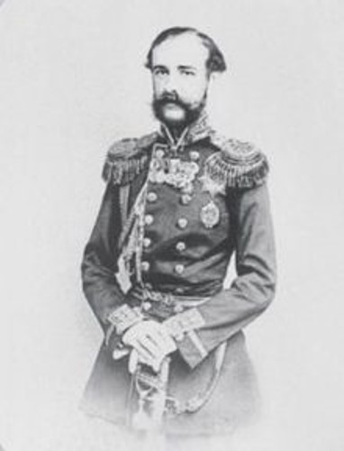За заслуги отца 6 октября 1831 года присвоен чин прапорщика Эриванского полка. После перевёлся в лейб-гвардии Преображенский полк. Вместе с другими прогрессивно мыслящими молодыми офицерами входил в кружок шестнадцати. С 1839 года — флигель-адъютант, затем — поручик лейб-гвардии Преображенского полка. Принимал участие в военных действиях на Кавказе. Отличился в подавлении восстания в Венгрии 1848—1849 годах, был поизведён в полковники. За отличие в Крымской войне 6 (18) декабря 1854 года пожалован чин генерал-майора с зачислением в Свиту. В 1852 г. женился на Ирине Ивановне, единственной сестре будущего кавказского наместника Иллариона Воронцова-Дашкова. 20 января 1856 года, в день смерти отца, назначен генерал-адъютантом. В дальнейшем находился в бессрочном отпуске «с правом отлучаться во всякое время за границу». В 1866 году вышел в отставку. Не позднее 24 сентября 1856 года стал владельцем здания в Санкт-Петербурге, фасады которого выходили на Английскую набережную, 8 и Галерную улицу 7.
Паскевич Ирина Ивановна
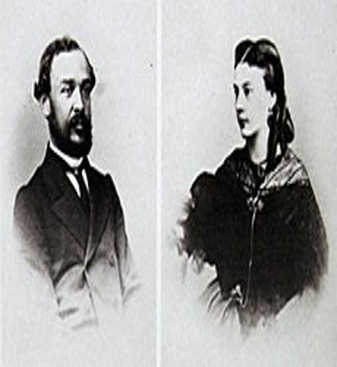Графиня Ирина Ивановна Воронцова-Дашкова, в замужестве светлейшая княгиня Варшавская, графиня Паскевич-Эриванская (1 августа 1835 — 14 апреля 1924) — русская благотворительница, хозяйка литературного салона, переводчица, сестра графа И. И. Воронцова-Дашкова. Дочь обер-церемониймейстера графа Ивана Илларионовича Воронцова-Дашкова (1790—1854) от брака его с Александрой Кирилловной Нарышкиной (1817—1856). Родилась в Петербурге, крещена 14 августа 1835 года в Симеоновской церкви при восприемстве Николая I и бабушки М. Я. Нарышкиной. В богатом родительском доме получила прекрасное домашнее образование, знала иностранные языки, хорошо рисовала и прекрасно вышивала. От матери своей, известной светской львицы и «повелительницы мод», унаследовала, её изящество и привлекательность, но красотой не отличалась. В 1853 году Ирина Ивановна стала женой князя Фёдора Ивановича Паскевича (1823—1903), сына знаменитого полководца И. Ф. Паскевича-Эриванского. После свадьбы они поселились в своем великолепном особняке на Английской набережной, д. 8, где вели сравнительно уединённый образ жизни и мало соприкасались с прочим петербургским обществом. Впрочем, дом их каждый вечер был открыт для избранного кружка родных и друзей. Брак их был бездетным
Штыхов Георгий Васильевич
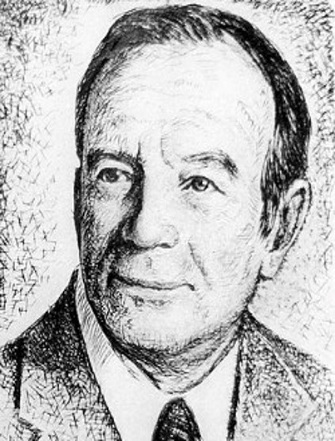Родился 14 июля 1927 года в деревне Старая Белица (ныне — Гомельского района) в семье служащих. В 1956 году окончил исторический факультет БГУ. Обучался в аспирантуре Института истории АН БССР (1959—1962). Большое влияние на формирование исторического мировоззрения оказали В. М. Игнатовский, А. Г. Митрофанов, Л. В. Алексеев. В 1965 году защитил кандидатскую диссертацию «Древний Полоцк (IX—XIII вв.)» (научный руководитель — В. Р. Тарасенко). В 1983 году защитил докторскую диссертацию «Города Полоцкой земли IX—XIII вв.». Профессор с 1987 года. Работал учителем в школах Гродненской и Гомельской областей (1956—1959). Младший научный сотрудник, старший научный сотрудник, заведующий сектором и отделом (1962—2000), с 2000 года — главный научный сотрудник отдела археологии средневекового периода Института истории НАН Беларуси. Возглавлял Белорусскую ассоциацию жертв политических репрессий (1992—1994). Член Белорусской социал-демократической партии («Народная Грамада»). Председатель Национального комитета Международной унии славянской археологии, один из учредителей фонда «Память жертв сталинизма Беларуси». Подготовил двух докторов и 19 кандидатов наук. Женат, есть дочь. Лауреат Государственной премии Белорусской ССР (1990).
Бородин Тимофей Степанович
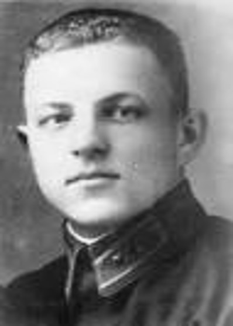Тимофей Бородин родился 1 (по новому стилю — 14) августа 1917 года в Гомеле в рабочей семье. Окончил десять классов средней школы, в 1941 году — Московский полиграфический институт. В 1936—1941 годах работал инженером на фабрике «Полеспечать» в Гомеле. В 1941 году вступил в ВКП(б). Начало войны встретил на строительстве оборонительных сооружений в Бресте. Вернувшись в Гомель, Бородин обратился в партийные органы с просьбой о направлении его на подпольную работу. Его просьба была удовлетворена, и Бородин остался во вражеском тылу с задачей организации подрывной и подпольной работы в Гомеле. Начиная с августа 1941 года, Бородин вёл активную работу по созданию подполья в городе, создав городской подпольный центр, доводивший задания горкома партии до подпольных групп и руководивший их действиями.
Цариков Борис Андреевич
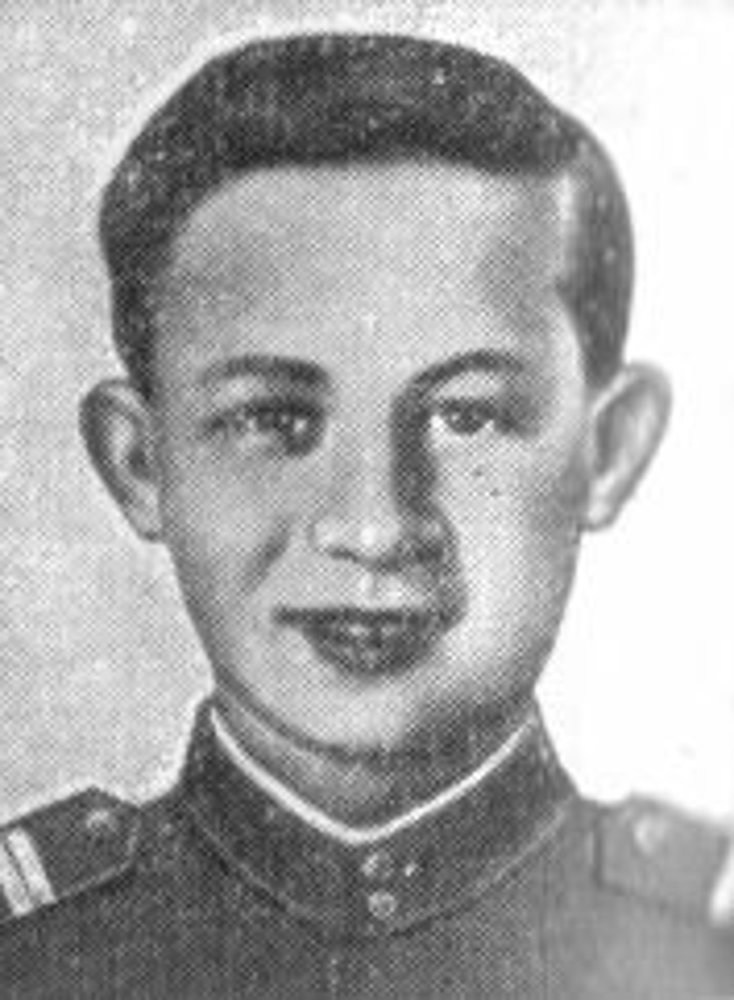Родился 31 октября 1925 года в городе Гомель Белоруссии в семье служащего. Белорус. Образование среднее. В Красной Армии с 1941 года. В действующей армии с февраля 1943 года. Разведчик 43-го стрелкового полка комсомолец красноармеец Борис Цариков с группой минёров 15 октября 1943 года первым переправился через реку Днепр в районе посёлка городского типа Лоев Гомельской области Белоруссии, водрузив на правом берегу Красное знамя, и в течение 5 суток участвовал в боях по расширению плацдарма; 17-летний воин несколько раз возвращался на левый берег с боевыми донесениями в штаб. Указом Президиума Верховного Совета СССР от 30 октября 1943 года за образцовое выполнение боевых заданий командования и проявленные при этом геройство и мужество красноармейцу Царикову Борису Андреевичу присвоено звание Героя Советского Союза. Погиб в бою 13 ноября 1943 года. Похоронен в братской могиле в посёлке городского типа Лоев Гомельской области Белоруссии. Награждён орденами Ленина и Красного Знамени.
Каменщиков Владимир Григорьевич
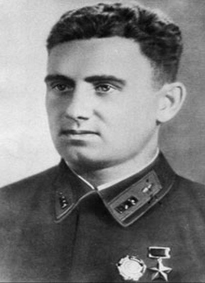Родился в семье рабочего, русский. В 1931 окончил школу ФЗУ при судоверфи, работал на лесозаводе и токарем в паровозоремонтном депо Сарепта.
В Красной Армии с 1934 года. В 1937 окончил Сталинградскую военную школу лётчиков. Служил в ВВС Западного особого военного округа: с ноября 1937 — младший лётчик 7-го штурмового авиационного полка (Гомель), с мая 1938 — командир звена этого же полка, с сентября 1939 — адъютант эскадрильи 41-го истребительного авиационного полка (Могилёв). Член ВКП(б) с 1940 года.
С 22 июня 1941 — в боях Великой Отечественной войны. Встретил войну в составе 41-го истребительного авиационного полка (9-я смешанная авиационная дивизия, ВВС 10-й армии, Западный особый военный округ). Свой первый бой принял в первые часы войны. При попытке атаковать бомбившие Белосток бомбардировщики его самого атаковали сразу 3 Ме-109. В бою он сбил одного из них, но два других подожгли и его машину. Выровняв её, сумел выброситься с парашютом на высоте около 200 метров, получив при этом ожоги лица и ранение руки.
За те дни, что Каменщиков был в госпитале, в полку не осталось ни одного самолёта (подавляющая их часть была уничтожена немецкой авиацией на своих аэродромах). Поэтому в начале июля Каменщикова перевели адъютантом эскадрильи в 126-го истребительного полка; 13-я бомбардировочная авиационная дивизия, ВВС 21-й армии) на Западном фронте. Летом 1941 года летал на истребителях И-16 и МиГ-3.
Исаченко Владимир Григорьевич
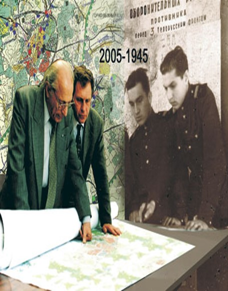Исаченко Владимир Григорьевич родился в городе Гомель 16 мая 1925 года.
Участник Великой Отечественной войны, в 1941 году добровольцем ушёл в сапёрный батальон. В 1941—1942 годах рабочий колхоза «Нижние Серги» Свердловской области. В 1943—1950 годах рядовой, старший сержант в составе 4-й, 6-й и 10-й инженерно-саперных бригад Советской Армии. В 1950—1951 годах инспектор квартирно-эксплуатационного управления Краснознаменного Белорусского военного округа. Член КПСС с 1947 года.
С 1951 года трудился старшим архитектором, а впоследствии главным архитектором Военпроекта № 92 ЧБВА. Окончил в 1958 году Белорусский государственный политехнический институт (БПИ). Член Союза архитекторов СССР с 1967 года. В 1967—1974 годах начальник управления по строительству и архитектуре Гродненского облисполкома — главный архитектор области. Во многом благодаря его инициативе был сохранён исторический центр Гродно, в котором по генплану 1963 года предусматривался снос старой застройки.
В 1974—2010 годах работал в Белниипградостроительстве: главный специалист по архитектуре, и. о. заместителя директора по архитектуре, главный архитектор проектов.
Зайцев Иван Степанович

Родился в 1926 году в деревне Чёнки в предместьях Гомеля в крестьянской семье, получил начальное образование.
В ноябре 1943 года, после освобождения Гомеля, был призван в РККА. С декабря 1943 года участвовал в боях на 3-м Украинском фронте и 1-м Белорусском фронте. На 16 апреля 1945 года являлся командиром стрелкового отделения в 301-й стрелковой дивизии. Дивизия в ходе Берлинской операции в этот день наступала на левом фланге 5-й ударной армии в первом эшелоне. 1050-й стрелковый полк наступал на железнодорожную станцию Вербиг в 5 километрах севернее Зелова (ныне в черте города).
Действовал в составе штурмовой группы 3-го батальона полка. На подступах к станции подразделение было остановлено огнём из дзота и залегло. Командир отделения Зайцев по своей инициативе со связкой гранат пополз к дзоту. На пути был обнаружен противником, который сосредоточил на Зайцеве огонь, и сержант был ранен. Тем не менее, продолжил движение к дзоту, и когда до огневой точки оставалось несколько метров, бросился на неё и закрыл телом амбразуру.
Был похоронен в Кюстрине, в братской могиле близ стадиона. Указом Президиума Верховного Совета СССР от 31 мая 1945 года за образцовое выполнение боевых заданий командования на фронте борьбы с немецко-фашистским захватчиками и проявленные при этом мужество и героизм сержанту Зайцеву Ивану Степановичу посмертно присвоено звание Героя Советского Союза
Головачёв Павел Яковлевич
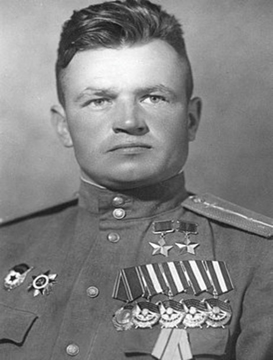Родился в деревне Кошелёво Буда-Кошелёвской волости Могилёвской губернии, ныне Буда-Кошелёвского района Гомельской области, в семье крестьянина. Белорус. Член КПСС с 1943 года.
Окончив в 1935 году в городе Гомеле школу фабрично-заводского ученичества, работал токарем и фрезеровщиком на лесокомбинате. Был форвардом заводской футбольной команды. Одновременно занимался в Гомельском аэроклубе. В 1938 году по комсомольской путёвке направлен в 8-ю Одесскую военную авиационную школу пилотов имени П. Д. Осипенко, которую окончил в конце 1940 года.
Направлен служить в 168-й истребительный авиационный полк, дислоцировавшийся в Крыму.
Мазуров Кирилл Трофимович
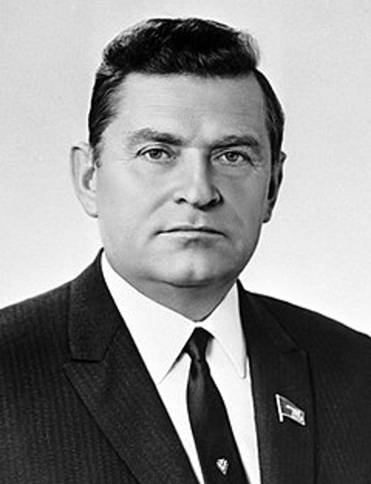Родился 23 марта (5 апреля) 1914 года в деревне Рудня-Прибытковская[2] в семье крестьянина. Отец — Трофим Иванович Мазуров, мать — Агафия Акимовна.
Окончил Гомельский автодорожный техникум (1933), ВПШ при ЦК ВКП(б) (1947).
В 1936—1938 гг. — служил в Красной Армии, затем работал в политотделе Белорусской железной дороги.
В 1940—1941 гг. — секретарь Гомельского горкома ЛКСМ, затем 1-й секретарь Брестского обкома ЛКСМ Белоруссии.
В 1941—1942 гг. — в Красной Армии, участник Великой Отечественной войны, был ранен. В сентябре 1942 направлен в тыл немецких войск в Белоруссию в качестве представителя Центрального штаба партизанского движения в звании подполковника, где до конца 1943 г. работал в партизанских соединениях; был секретарём подпольного ЦК ЛКСМ Белоруссии.
В 1943—1944 гг. — второй секретарь ЦК ЛКСМ Белоруссии.
В 1944—1947 гг. — первый секретарь ЦК ЛКСМ Белоруссии.
В 1947—1948 гг. — в аппарате ЦК КП (б) Белоруссии.
В 1949—1950 гг. — второй, затем первый секретарь Минского горкома КП (б) Белоруссии.
В 1950—1953 гг. — первый секретарь Минского обкома партии.
В 1953—1956 гг. — Председатель Совета Министров Белорусской ССР.
В 1956—1965 гг. — первый секретарь ЦК КП Белоруссии.
В 1965—1978 гг. — Первый заместитель Председателя Совета Министров СССР. В 1968 г. на месте осуществлял политическое руководство операцией по вводу войск в Чехословакию.
С 1978 г. — персональный пенсионер союзного значения.
Член ВКП(б) с 1940 года, член ЦК КПСС (1956—1981). Депутат Верховного Совета СССР (1950—1979), член Президиума Верховного Совета СССР (1958—1965). Народный депутат СССР (1989).
В 1986—1989 гг. — председатель Всесоюзного совета ветеранов войны и труда.
Похоронен на Новодевичьем кладбище.
Его дочь Наталья замужем за сыном И. В. Капитонова Владимиром.
Зубарев Иосиф Егорович
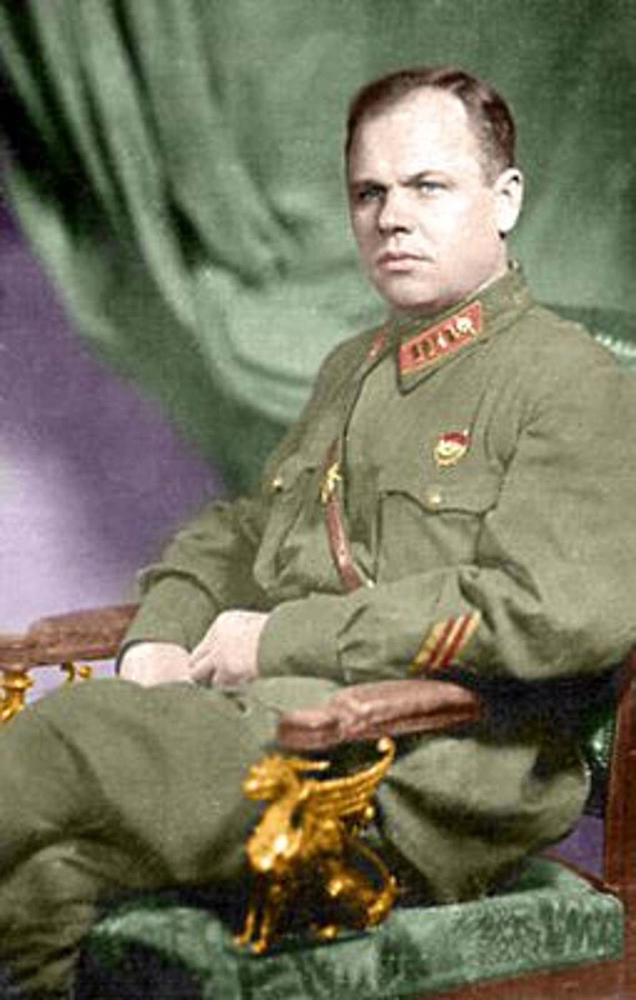Родился 2 ноября 1907 года в деревне Лопатино. Национальность — русский (в более поздних документах указывается национальность — белорус).
Семья — семь человек; мать, отец, три брата и сестра. До революции 1917 г. родители крестьяне-середняки занимались своим хозяйством в д. Лопатино. Позднее земля была национализирована, и с 1934 г. они трудились в колхозе «Новичи» Гомельской области.
В 1924 г. окончил семилетку. С 1924 г. по 1926 г. занимался крестьянством в своем хозяйстве, д. Лопатино. В 1926-29 гг. учился в Гомельском педагогическом техникуме. Профессия — учитель. В течение всего обучения учился на гос. стипендии по 2-й категории. В 1929-30 гг. — заведующий школой и педагог в Ивановской сельской школе Шипиловского с/с Лоевского района Гомельской области. 1930 г. — заведующий и педагог в Жгунской семилетней школе Гомельского района. 1930 г. — женат на гражданке Москвичевой Софии Фёдоровне 1908 г. рождения, уроженке села Шарпилово Лоевского района Гомельской области. Развёлся как с чуждой. Затем женат на гражданке Апш Лидии Индриковне 1910 г. рождения, уроженке села Грудиновка Могилёвского района Могилёвской области. С 1930 года началась военная карьера, закончившаяся 10 января 1944 года — гибелью на Украинском фронте.
Жена с двумя детьми (Эдуард и Владимир, 1939 и 1941 г.р.) в 1942-43 гг. находилась в Башкирской АССР в эвакуации.
На момент гибели проживала по адресу: г. Москва, Петровка 26, кв.369.
Третьяков Яков Адамович
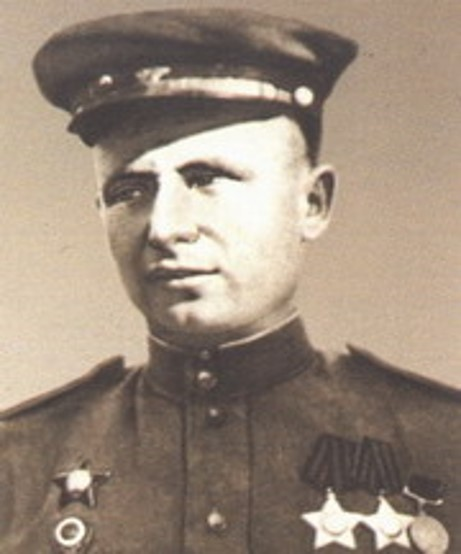Родился 10 (23) октября 1916 года в селе Зябровка (ныне — Гомельского района Гомельской области) в крестьянской семье. Белорус. Член ВКП/КПСС с 1943 года. Окончил 7 классов. Работал трактористом в колхозе «Весёлый труд», бригадиром полеводческой бригады в Мазановском районе Амурской области.
В Красной Армии с июля 1941 года. На фронте в Великую Отечественную войну с апреля 1942 года. Воевал на Западном, Брянском, Центральном, 1-м и 2-м Белорусских фронтах.
Наводчик орудия 1955-го истребительно-противотанкового артиллерийского полка младший сержант Третьяков с боевым расчётом 23 декабря 1943 года в бою за населённый пункт Гадиловичи разбил 3 блиндажа и дзот, подавил 5 пулемётных точек, уничтожил до двух взводов вражеской пехоты. Приказом по бригаде № 128 от 9 февраля 1944 года младший сержант Третьяков Яков Адамович награждён орденом Славы 3-й степени.
Старший сержант того же полка и бригады Третьяков 14 января 1945 года в бою в районе города Бялобжеги, заменив выбывшего из строя командира взвода, нанёс противнику значительные потери в живой силе и боевой технике. Взводом было уничтожено более 20 противников, разрушен дзот, подавлены несколько огневых точек. 4 марта 1945 года приказом № 481 командующего 5-й ударной армии старший сержант Третьяков Яков Адамович награждён орденом Славы 2-й степени.
Старшина Третьяков с расчётом в боях на подступах к Берлину уничтожил более 10 автоматчиков, поразил противотанковое орудие, подавил несколько миномётов. В бою за город Меглин уничтожил 2 бронетранспортёра, противотанковое орудие, захватил продовольственный склад.
Указом Президиума Верховного Совета СССР от 15 мая 1946 года за мужество, отвагу и героизм, старшина Третьяков Яков Адамович награждён орденом Славы 1-й степени.
Умер 4 декабря 1985 года.
Выходцев Пётр Созонтович
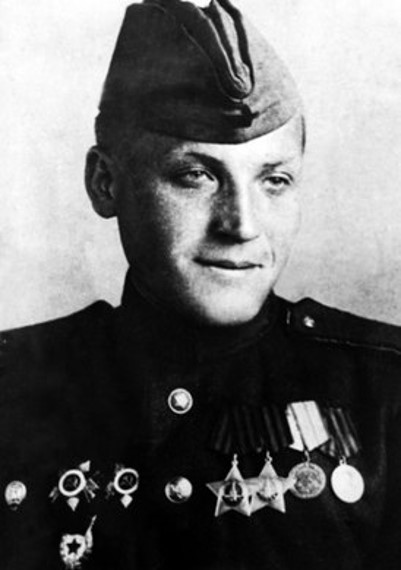Родился в 1923 году в селе Годичев Гомельской области в крестьянской семье. Через десять лет семья переехала на Северный Кавказ в Орджоникидзе.
Окончив школу в 1940 году, поступил на филологический факультет Северо-Осетинского пединститута, но со второго курса был призван в Красную армию.
Участник Великой Отечественной войны; на фронте с марта 1942 года, стрелок стрелкового полка на Сталинградском фронте, здесь вступил в комсомол. В октябре того же года ранен. Три месяца госпиталя и вернулся в свой полк, продолжил воевать уже на Северном Кавказе, на 1-м Прибалтийском фронте, на 1944 год — разведчик-наблюдатель батареи 120-мм миномётов 6-го полка 2-й гвардейская стрелковой дивизии на 3-м Белорусском фронте. Участвовал в боях за Кенигсберг. В августе 1944 года ранен, в октябре контужен. Демобилизован в конце 1945 года.
Награждён тремя орденами Отечественной войны I (январь 1945, 1985) и II (1944) степени, Красной Звезды (1943), Славы III (декабрь 1944) и II (май 1945) степени, а также медалями «За оборону Сталинграда», «За оборону Кавказа», «За взятие Кенигсберга» и «За победу над Германией».
Окинчиц Евдоким Гаврилович
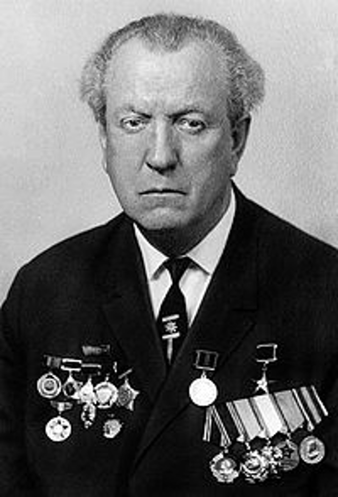Родился 30 июля 1911 года в крестьянской семье в селе Фащевка.
Получил неполное высшее образование. Обучался на вечернем факультете Ленинградского электромеханического института (отраслевого вуза Ленинградского политехнического института), который был вынужден оставить из-за болезни на третьем курсе. Потом работал на различных предприятиях Ленинграда. С 1934 по 1940 год — мастер, начальник электроцеха, заместитель главного энергетика на строительстве Челябинского электролитного цинкового завода. С 1940 по 1944 год — на различных партийных должностях в Челябинском обкоме ВКП(б) и Челябинского электролитного цинкового завода.
В 1944 году после освобождения Полтавской области направлен по партийной путёвке в Полтаву, где работал в партийных органах. Участвовал в работе комитета по восстановлению разрушенных городских производственных предприятий. В 1949 году назначен заместителем директора Полтавского электроремонтного завода и в мае 1953 года — директором этого же предприятия (с 1965 года — Полтавский электромеханический завод, п/я Х-5067). Находился на этой должности в течение двадцати лет до выхода на пенсию. В 1971 году удостоен звания Героя Социалистического Труда «за выдающиеся заслуги при выполнении плана 8-й пятилетки, создание новой техники и вклад в развитие отрасли».
В 1973 году вышел на пенсию. Проживал в Полтаве, где скончался в 1989 году. Похоронен на Аллее героев полтавского Центрального кладбища.
Сулейников Кирилл Филипович
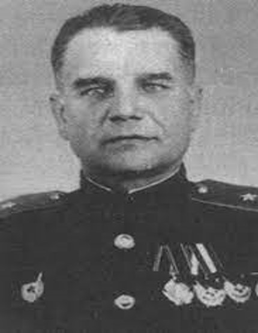С началом воины находился на прежней должности. В ходе приграничного сражения с 23 по 25 июня корпус принимал участие в ходе фронтового контрудара в полосе 8-й армии в районе Шяуляйского укрепленного района, во время которого противник понёс потери, в результате чего его наступление было задержано на несколько дней. Однако ходе этих боевых действий корпус практически потерял материальную часть и попал в окружение, после чего отступал к реке Западная Двина и затем по территории Белоруссии и Брянской области. В августе 1941 года генерал-майор Сулейков вышел из окружения и с сентября служил в инспекции Главного бронетанкового управления Красной Армии. В октябре 1942 года был назначен на должность заместителя начальника этого же управления, а затем исполнял должность заместителя командующего войсками Северо-Западного фронта по бронетанковым и механизированным войскам.
С мая 1943 года исполнял должность заместителя командующего 3-й гвардейской танковой армии, после чего принимал участие в боевых действиях в ходе Орловской наступательной операции. В августе того же года Сулейков был назначен на должность командира 7-го гвардейского танкового корпуса, который во второй половине сентября принимал участие в ходе форсирования Днепра в районе Великого Букрина и затем боевых действий по расширению букринского плацдарма. Вскоре корпус во время Киевской наступательной операции принимал участие в освобождении Василькова и Киева, за что был удостоен почётного наименования «Киевский». Из-за ухудшившегося после контузии здоровья генерал-майор Сулейков в декабре был назначен на должность заместителя командира 7-го гвардейского танкового корпуса, в марте 1944 года — на должность заместителя командира 1-го танкового корпуса, а в августе — на должность заместителя командира 13-го гвардейского стрелкового корпуса, который принимал участие в боевых действиях в ходе Белорусской, Каунасской, Мемельской, Кёнигсбергской и Земландской наступательных операций.
Галина Докутович Ивановна
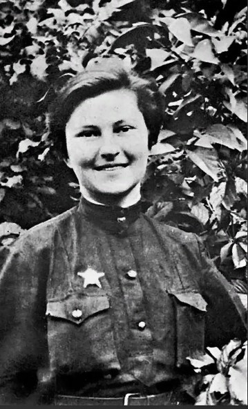Родилась 20 февраля 1921 года в Гомеле.
Окончила Гомельский аэроклуб (1938), училась в Московском авиационном институте.
В 1941 году добровольцем ушла на фронт. Окончила Энгельсскую авиационную школу. Ещё в период обучения, зимой 1942 года, в качестве штурмана выполняла ответственные полёты на тяжёлом транспортном самолёте «ТБ-3».
Была штурманом 46-го гвардейского Таманского авиаполка лёгких ночных бомбардировщиков. Совершила 136 боевых вылетов.
Летом 1942 года получила тяжёлое повреждение позвоночника. После лечения вернулась в полк, хотя у неё было отпускное свидетельство для лечения на 6 месяцев. Член ВКП(б)/КПСС с 1943 года. После боевых ночных вылетов её мучили боли в позвоночнике, но никто не слышал от неё ни одной жалобы.
Погибла при выполнении боевого задания над станицей Крымская (ныне г. Крымск) Краснодарского края. Похоронена в селе Русское Краснодарского края в братской могиле, где на мемориальной плите начертано её имя.
Лизюков Евгений Ильич
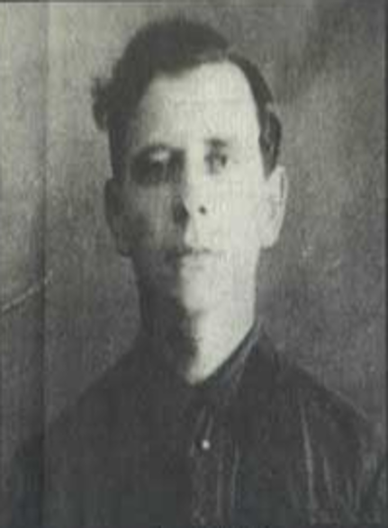Родился в 1899 году в городе Гомеле в семье сельского учителя Ильи Устиновича Лизюкова. Семья Лизюковых проживала в Гомеле на Троицкой улице недалеко от Конного базара (ныне — улица Крестьянская и Центральный рынок)[1].
Участник Гражданской войны и Великой Отечественной войны.
В начале Великой Отечественной войны добровольцем ушёл на фронт, в июле 1941 года получил тяжёлое ранение, из-за чего ему было отказано в возвращении на фронт. Тогда Евгений Ильич поступил в школу по подготовке партизанских кадров при ЦШПД, после окончания которой в 1942 году в звании старшего лейтенанта направлен на оккупированную территорию Минской области. В 1943-44 годах — начальник штаба партизанского отряда имени Чкалова 225-й бригады имени Суворова, командир партизанского отряда имени Дзержинского бригады имени Фрунзе Минского партизанского соединения. В 1944 году становится командиром отряда имени Молотова 2-й Минской бригады.
7 июля 1944 года отряд под командованием Евгения Лизюкова направлялся в Минск для участия в партизанском параде. Возле деревни Гребень Пуховичского района Минской области партизаны столкнулись с группой немцев, выходивших из окружения у деревни Гребень Пуховичского района. Евгений Ильич Лизюков погиб в бою. Похоронен в деревне Новополье Пуховичского района, на могиле установлен памятник.
Лизюков Александр Ильич
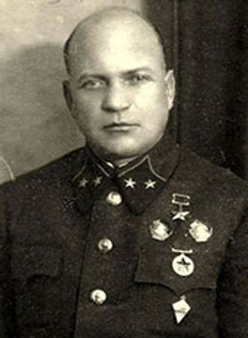Алекса́ндр Ильи́ч Лизюко́в (13 [26] марта 1900 — 23 июля 1942) — советский военачальник, Герой Советского Союза, генерал-майор, член ВКП(б) с 1919 года.
В годы Великой Отечественной войны проявил себя при обороне переправ через Днепр, оборонительного рубежа по реке Вопь, а также в Битве под Москвой. В 1942 году во время Воронежско-Ворошиловградско оборонительной операции, командовал 5-й танковой армией, наносившей контрудар по группировке немецких войск, наступавшей на Воронеж. Погиб в бою; точное место захоронения остаётся неизвестным. Согласно официальной версии, в результате журналистского расследования 2008 года останки генерала были найдены и перезахоронены у памятника Славы, установленного на братской могиле защитников Воронежа. Однако эта версия противоречит всем известным историческим источникам и не соответствует фактам[2][3].
Родной брат Героя Советского Союза Петра Ильича Лизюкова и командира партизанского отряда Евгения Ильича Лизюкова.
Лизюков Пётр Ильич
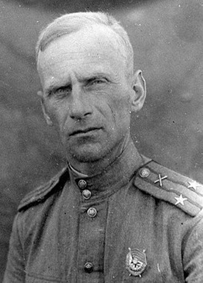22 июня 1941 года артиллерийский полк, в котором служил П. И. Лизюков, принял бой на реке Западный Буг возле города Сокаль. После гибели командира полка начальник штаба П. И. Лизюков принял командование на себя. Полк с боями отступал до Киева. 17 июля 1941 года принимал участие в контрнаступлении Красной армии на Днепре, после чего около месяца его часть выходила из окружения.
В начале 1942 года майор П. И. Лизюков назначен на должность командира 651-го артиллерийского полка 69-й лёгкоартиллерийской бригады, воевавшей на Юго-Западном фронте.
Участник Сталинградской битвы.
Руководит формированием, а затем обучением 46-й истребительно-противотанковой бригады. В качестве командира этой бригады 1 мая 1944 года направляется на Ленинградский фронт
В июне 1944 года бригада участвует в освобождении города Выборг.
В конце лета — начале осени после окончания боевых действий с Финляндией бригада под командованием П. И. Лизюкова в сентябре-октябре 1944 года участвует в освобождении городов Таллин и Рига.
46-я истребительно-противотанковая артиллерийская бригада в составе 11-й гвардейской армии (3-й Белорусский фронт) 29 января 1945 года вышла к заливу Фришес-Хафф (в настоящее время Калининградский залив), чем прервала связь по суше с восточно-прусской группировкой.
30 января 1945 года в окрестностях Хайде-Вальдбург (в настоящее время посёлок Прибрежный в черте города Калининград) артиллерийская бригада под командованием П. И. Лизюкова сдерживала контрнаступление противника. Останавливая отступление частей, он организовал оборону, сам лёг за крупнокалиберный пулемёт и открыл огонь по противнику. В этом бою полковник П. И. Лизюков погиб.
ПРИПЯТСКИЙ НАЦИОНАЛЬНЫЙ ПАРК
Припятский национальный парк (белор. Прыпяцкi нацыянальны парк) — национальный парк на юге Белоруссии, подчинён Управлению делами Президента Республики Беларусь. Припятский национальный парк расположен на западе Гомельской области в 350 км восточнее Бреста и в 250 км южнее Минска, к югу от трассы Брест — Брянск. В 1969 году сперва был создан Припятский государственный ландшафтно-гидрологический заповедник, в 1996 году преобразованный в национальный парк. Площадь заповедника, а позже национального парка, увеличивалась, сегодня она составляет 188 485 га. Южная часть его представлена особо охраняемой природной территорией площадью 85 841 га. Администрация национального парка находится в агрогородке Лясковичи.
Республиканский биологический заказник «Днепро-Сожский»
Республиканский биологический заказник «Днепро-Сожский» — национальный заказник общей площадью 14 556 гектар, находящийся на юго-востоке Белоруссии в Лоевском районе Гомельской области между реками Днепр и Сож. Заказник был образован 5 августа 1999 года постановлением Совета Министров Республики Беларусь в целях «сохранения ценных лесных формаций и луговых сообществ с комплексами редких и исчезающих видов растений и животных, занесенных в Красную книгу Республики Беларусь». С 2005 года работает государственное учреждение «Республиканский биологический заказник «Днепро-Сожский». Территория заказника на 80 % занята лесами, она является ареалом 140 видов птиц, в заказнике произрастает более 660 видов растений.
Полесский государственный радиационно-экологический заповедник
Полесский государственный радиационно-экологический заповедник (белор. Палескі дзяржаўны радыяцыйна-экалагічны запаведнік) (акроним: ПГРЭЗ) — крупнейший заповедник Белоруссии и единственный в мире радиационно-экологический заповедник. Заповедник занимает 215 тысяч га на территории трёх наиболее пострадавших от аварии на Чернобыльской АЭС районов Гомельской области — Брагинского, Наровлянского и Хойникского. Северо-западнее заповедника расположен национальный парк Припятский. Южнее — украинская часть Зоны отчуждения Чернобыльской АЭС. Заповедник был организован 18 июля 1988 года в белорусской части зоны отчуждения Чернобыльской АЭС. На территории находятся 96 покинутых населённых пунктов, где до аварии и эвакуации в 1986 году проживало более 22 тысяч жителей. По состоянию на 2009 год ежегодные затраты на заповедник составляли около 4 млн долларов США.
р. Днепр

Река Днепр – одна из самых больших рек Европы, впадает в Черное море. Наименьшая часть и исток реки находится в пределах России (22%). Небольшой отрезок реки проходит через Беларусь (23%), но основной ее путь лежит по территории Украины (55%). Общая длина реки Днепр на сегодняшний день составляет 2201 километр, что несколько меньше, чем до постройки каскада водохранилищ, которые выпрямили ее русло. Существует несколько версий происхождения названия. Основной считается теория об иранских корнях, где «Днепр» означает «глубокая река». Однако разные народы предлагали свои наименования. Так, Геродот еще в V веке до нашей эры говорил о Борисфене, что означает «река с севера». Несколько позже в римских источниках Днепр называется Данаприс. А славяне Киевской Руси прозвали водную артерию Славутичем
р. Припять
История реки и ее названияПервое название Припеть. Украинское – Прип’ять, белоруссы называют Прыпяць. В летописях фигурирует как При-петь. Значение гидронима складывается, как приток, падающий, стремящийся вперед.Но около 17 тыс. лет вода все-таки нашла прореху, а потом и вовсе разрушила стену гряды. Хлынувшие потоки промыли себе долину и образовали русло, которое впоследствии «приглянулось» Припяти. Климат в бассейне реки с мягкой зимой и влажным летним периодом. Характеризуется, как умеренный.Река похожа на блудную дочь. Родившись на Украине, через 204 км убегает в Беларусь, но нагулявшись, возвращается и последние 50 км смиренно течет по родной нэньке. Общая протяженность составляет 775 км.
р. Сож
Река Сож — второй по величине и водности левый приток Днепра — берёт начало на Смоленско-Московской возвышенности в Смоленском районе Смоленской области в 12 км к югу от Смоленска. Протекая по территории двух областей Белоруссии (Могилёвской и Гомельской), пересекает различные геоморфологические районы ледникового и водно-ледникового происхождения.Флора и фаунаЭто один из чистейших водоемов Европы, в водах которого обитают несколько десятков видов рыбы. Ихтиофауна включает щуку, сома, леща, судака, жереха и проч. С левой стороны растут хвойные и лиственные леса.
р. Березина

Березина – единственная река в Беларуси, которая полностью протекает по территории стране. Протяжённость – 613 км. Это один из крупнейших правых водопротоков Днепра. Вливается река в Днепр в Гомельской области возле деревни Береговая Слобода.Зарождается Березина в Витебских болотах недалеко от райцентра Докшицы, далее течёт на юг. На своём пути река очень извилистая, она постоянно петляет, много излучин. Глубина реки не очень большая, от 1,5 метра до 3-ёх. Встречаются места и глубже – около 7 м.Русло реки тоже разнится и не одинаковое по ширине, в одних местах оно узкое, в других – расширяется на сотни метров. Берега высокие и крутые, в некоторых местах высота их около 15 м. Берега реки, в основном, покрыты лесами.
Любенское озеро
Озеро Любенское относится к бассейну реки Сож (левый приток Днепра). Является озером пойменного типа, расположено в пойменной зоне реки. Любенское озеро в ширину порядка 40 метров, его глубина от 3 до 6 метров.
Белое озеро
Озеро Белое находится в Житковичском районе Гомельской области и относится к бассейну реки Припять. Является водным объектом старичного типа. Площадь озера составляет 1,56 км2, а максимальная глубина достигает 10 м. Местность, в которой находится водоем, низинная, местами грядистая, болотистая, поросшая кустарником и редколесьем. Белое озеро находится на координаты: 53.7664° северной широты и 24.1992° восточной долготы.
Озеро Гадынь
Озеро Гадынь находится в Речицком районе Гомельской обл., в 5 км на северо-восток от г. Речица, возле д. Копань и относится к бассейну р. Днепр (фактически расположено в ее затапливаемой, во время высоких паводков, пойме). Является озером старичного типа. Местность равнинная (местами холмистая), низинная, большей частью болотистая, поросшая кустарником, местами лесом. Берега преимущественно низкие, заболоченные, поросшие кустарником и редколесьем. Озеро, в средней его части, пересекает по мосту железная дорога (участок Гомель-Калинковичи). Впадают 3 ручья, одним из которых озеро соединено с оз. Кривой Гиров, которое, в свою очередь, широкой протокой соединено с р. Днепр. Имеется 2 маленьких острова. В озере обитают щука, лещ, язь, карась, линь, плотва, сом и др. рыба. Производится промысловый лов рыбы. Организовано платное любительское рыболовство. Площадь зеркала 0,48 км?, длина 3,62 км, наибольшая ширина 0, 18 км, длина береговой линии 7,35 км.
Озеро Ревучее
Озеро Ревучее находится в Добрушском районе Гомельской области. Расположено в бассейн р. Очеса, в 22 км к северо-востоку от г. Добруш, в 2 км к северо-западу от д. Березки. Площадь 0,87 км2, длина 1,34 км, максимальная ширина 0,94 км, максимальная глубина 2 км.
Озеро Святое
Озеро Святое находится в Речицком районе Гомельской обл., примерно в 26 км на северо-запад от г. Речица, между деревнями Первомайск и Околица и относится к бассейну р. Днепр. Местность преимущественно равнинная, местами грядистая, поросшая кустарником и лесом, местами болотистая. Берега песчаные (местами глинистые), преимущественно возвышенные, поросшие кустарником и редколесьем. В озере обитают щука, лещ, плотва, карась, окунь и др. рыба. В 2,8 км на север от озера, на берегу р. Березина в д. Гагали расположена агроусадьба "Березина" (рыбалка, сбор ягод и грибов, фрукты и овщи с огорода и др.). Озеро Святое располагается в 6 км к западу от города Рогачёв и в 1 км к северу от деревни Стреньки. Высота водного зеркала над уровнем моря составляет 135,3 м. Площадь поверхности озера составляет 0,24 км², длина — 0,65 км, наибольшая ширина — 0,6 км. Длина береговой линии — 2,03 км.
Озеро Старик
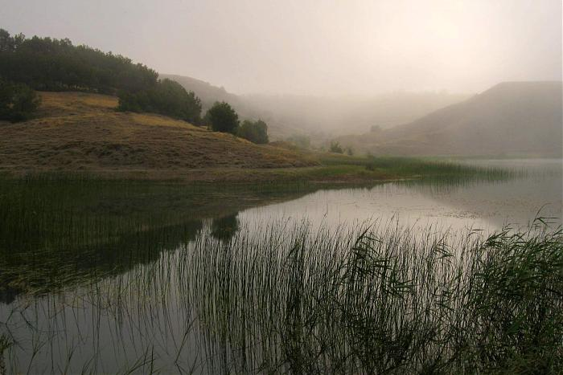Озеро Старик находится в Речицком районе Гомельской обл., примерно в 29 км на северо-запад от г. Речица, примерно в 1,6 км на северо-запад от д. Гагали и относится к бассейну р. Березина (фактически расположено в ее пойме) Является старичным озером. Местность равнинная, низинная, в районе озера грядисто-холмистая, поросшая кустарником и лесом, болотистая, незаселенная. На западе соединено широкой протокой с оз. Глушицкое и р. Березина. В 1,3 км на юго-запад от озера, на берегу р. Березина в д. Гагали расположена агроусадьба "Березина" (рыбалка, сбор ягод и грибов, фрукты и овщи с огорода и др.). Площадь: 0,4 км².
Озеро Старое
Озеро Старое располагается в 9 км южнее города Чечерск. К северу от водоёма находится деревня Старые Малыничи, к югу — деревня Чернявские Малыничи. Площадь зеркала составляет 0,63 км², длина — 1,07 км, наибольшая ширина — 0,8 км. Длина береговой линии — 3,25 км. Наибольшая глубина — 7,5 м, средняя — 2,58 м. Объём воды в озере — 1,63 млн м³. Площадь водосбора — 18,8 км².
Озеро Старуха
Старуха-озеро в Наровлянском районе Гомельской области Беларуси на Правобережной пойме реки Припять, в 7 км к юго-востоку от города Наровля, возле деревни Конотоп. Площадь поверхности 0,42 км2. Длина 3,07 км. Наибольшая ширина 0,15 км. Длина береговой линии 7,3 км. Котловина озера является частью староречья Припяти, серповидной формы, сильно вытянутая. Склоны котловины высотой 2-3 м, под кустарником. Береговая линия слаборазвитая. Берега низкие, высотой 0,2 м. протоками соединено с озером березовый старикашка и рекой Припять.
Озеро Стоячее
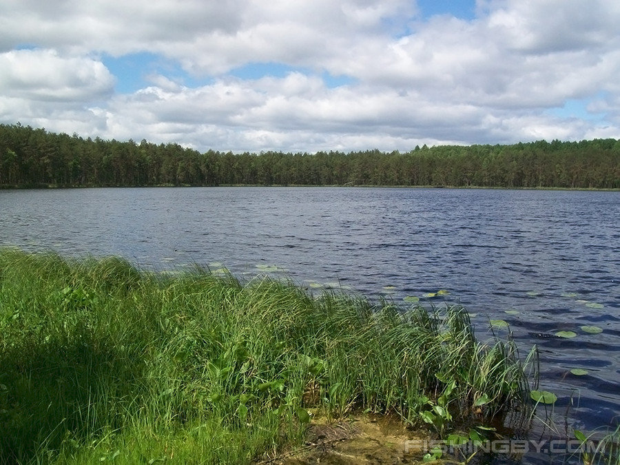Озеро Стоячее располагается в 5 км к югу от города Чечерск. На западном берегу находится деревня Средние Малыничи. Высота водного зеркала над уровнем моря составляет 134,5 м. Площадь поверхности водоёма составляет 0,42 км², длина — 0,98 км, наибольшая ширина — 0,57 км. Длина береговой линии — 2,65 км. Наибольшая глубина — 12,5 м, средняя — 3,76 м. Объём воды в озере — 1,58 млн м³. Площадь водосбора — 5,25 км².
Озеро Буснежье
Бусне́жье (белор. Буснежжа) — небольшое пойменное озеро в Гомельской области Белоруссии, расположенное недалеко от деревни Копань (примерно 1,4 км на юго-запад), Речицкий район (примерно в 5 км на восток от города Речица). От водоёма отходят две протоки, соединяющиеся с двумя старичными озёрами: на севере — с озером Гадынь, на юго-востоке — с озером Долгое.
Озеро Шапор
Пойменное озеро на левом берегу реки Сож в восточной части Гомеля в Новобелицком районе. Связано с руслом реки Новобелицким каналом. Состояние воды в Шапоре не контролируется, с близлежащих предприятий в него попадают ливневые стоки. Следовательно, озеро не предназначено для купания и активного отдыха. Однако в месте впадения Новобелицкого канала в Сож расположен пляж с соответствующей инфраструктурой.
Озеро Дедно
Старичное озеро в 450 метрах к северу от озера Обкомовское. Используется для сброса ливневых канализаций центральной части Гомеля. Не предназначено для проведения досуга и не благоустроено. Берега заросшие. На картах, относящихся к 18 веку, озеро имеет название Жерлодедно и связано с основным руслом Сож протокой. Позже озеро превратилось в старицу. В связи с почти отсутствующей антропогенной нагрузкой вокруг Дедно сформировалась инвазия растений совершенно нетипичных для городских территорий. Оказывается, озеро «Обкомовское» (Дедно) не отнесено к местам, официально разрешенным для купания. Глубина тут достигает 24 метров, и самое главное — понижение дна резкое, есть ямы до 8 метров прямо у берега. Вероятно, это результат работы земснарядов, намывавших тут песок под микрорайон «Мельников луг».
Озеро Роповское
Озеро пойменного типа, связано с рекой Сож двумя протоками. Расположено в Советском районе Гомеля, в южной части города вдоль улицы Богдана Хмельницкого. Название озера от аббревиатуры РОП — районный отстойник плавсредств. В акватории озера расположена лодочная станция, гребная база и два пляжа с соответствующей инфраструктурой.
Озеро Осинник
Озеро Осинное находится в Чечерском районе Гомельской обл., примерно в 14 км на юг от г. Чечерск, возле деревень Себровичи и Шепотовичи и относится к бассейну р. Сож (фактически расположено в ее припойменной зоне). Является озером пойменного типа. Местность преимущественно равнинная, низинная, местами грядистая, болотистая, поросшая кустарником и редколесьем.
Волотовское озеро
Озеро Волотовское — самое крупное озеро Волотовского каскада озёр в Гомеле. Расположено между Бурым болотом и каскадом малых озёр. Некогда весь Волотовской каскад был частью озера Волотово в деревне с одноименным названием. В настоящее время территория озера благоустроена и активно используется. Озеро богато рыбой, в 2016 году на Волотовском прошел чемпионат Беларуси по водно-моторному спорту.
Мозырский нефтеперерабатывающий завод
В Гомельской области лишь одно предприятие, занимающееся переработкой нефти — «Мозырский НПЗ» (полное название звучит так — «Мозырский нефтеперерабатывающий завод»). Помимо переработки нефти «Мозырский НПЗ» занимается переработкой газа, производством газопродуктов (ГПЗ), а также производством кокса. Нефтепродукты - это продукты, получаемые из нефти путем ее переработки. Это могут быть бензин, дизельное топливо, керосин, мазут и другие виды топлива. Они нужны для того, чтобы обеспечивать транспорт, промышленность и бытовые нужды людей.
Белоруснефть-Промсервис
«Белоруснефть» занимается бурением нефтегазовых скважин. Добывает нефть и газ а также транспортирует нефть и газ. «Белоруснефть-Промсервис» специализируется на предоставлении услуг по комплексному техническому обслуживанию инженерной инфраструктуры и технологического оборудования.А также специализируется на предоставлении услуг IT-аутсорсинга, связанных с эксплуатацией промышленных предприятий и производственных цехов. «Белоруснефть» располагается в Гомеле, а «Белоруснефть-Промсервис» в Речице.
Гомельтранснефть Дружба
Гомельтранснефть Дружба» — государственное нефтетранспортное предприятие Белоруссии, основаное в ноябре 1964 года. Компания перекачивает белорусскую и российскую нефть на «Мозырский нефтеперерабатывающий завод».
«Гомельтранснефть Дружба» и «Запад?Транснефтепродукт» занимаются транспортировкой нефти и газа. «Запад-Транснефтепродукт» располагается в Мозыри
Белорусский металлургический завод
Белорусский металлургический завод — производит металлопрокат, сталеплавильную продукцию, метизы и трубы. В нем оборудованы соответствующие цеха и производственные помещения. Оснащение постоянно пересматривается, дополняется, модернизируется. Это позволяет выпускать продукцию конкурентного известным европейским, западным маркам уровня. БМЗ располагается в Жлобине. Металлургическое производство — это процесс переработки руды в металлы. Оно нужно для получения металлических материалов, которые используются в различных отраслях промышленности, например, в автомобильном и строительном производстве. Благодаря металлургическому производству мы можем создавать качественные и прочные изделия из металла.
Гомсельмаш
«Гомсельмаш» отвечает за производство инструментов, технологической оснастки, проихводство комбайнов, производство с/х техники, навесного оборудования. Гомсельмаш - производитель сельхозтехники, выпускающий зерноуборочные и кормоуборочные комбайны, а также другие сельскохозяйственные машины.
Гомельский химический завод
Химическая промышленность — это отрасль промышленности, которая занимается производством химических веществ и продуктов на их основе. Она имеет огромное значение для экономики и общества в целом, так как её продукция используется во многих отраслях промышленности, в том числе в медицине, сельском хозяйстве, энергетике, пищевой и текстильной промышленности, а также в производстве бытовой химии и косметики. Гомельский химический завод — добыча, производство алюминия, глинозема и фтористых солей, Производство минеральных удобрений, серной кислоты.
Речицадрев
«Речицадрев». Современное предприятие, специализирующееся на производстве офисной и бытовой мебели, древесностружечных и ламинированных плит, фанеры клееной, латофлексах, брикетах топливных. Научно-исследовательская лаборатория Техническая керамика и наноматериалы изготавливает пористую проницаемую керамику, изоляционную, установочную керамику, термостойкую огнеупорную керамику, износостойкую керамику,нагревательные керамические изделия. Располагается по адресу г. Гомель, Пр-т Октября, 48.
Спартак
«Спартак», Основными видами продукции, выпускаемой фабрикой, являются: карамель, конфеты, шоколад и шоколадные изделия, печенье, вафельные изделия, торты и пирожные. Пищевая промышленность — это отрасль промышленности, которая занимается производством продуктов питания, напитков и их компонентов. Она имеет огромное значение для общества в целом, так как обеспечивает население пищей и напитками. Пищевая промышленность является ключевой отраслью экономики многих стран, создавая рабочие места и обеспечивая экспорт продукции. Она также играет важную роль в обеспечении безопасности продуктов питания и контроле за качеством их производства.
Милкавита
«Милкавита» занимается производством молочных консервов. Располагается в Гомеле по адресу ул. Братьев Лизюковых, 1, г. Гомель. ОАО «Милкавита» - является одним из крупнейших предприятий Беларуси в своей отрасли, самым крупным в Гомельской области. Компания оснащена современным, соответствующим передовым мировым технологиям оборудованием и способна переработать более 800 тонн молока в сутки. Ассортиментный портфель предприятия насчитывает более 100 наименований. ОАО «Милкавита» предлагает: молоко сухое (обезжиренное, цельное) сыворотку молочную сухую (деминерализованную СД - 50, подсырную, кислую), масло сливочное, сыры (твердые, полутвердые, плавленые), молоко (ультрапастеризованное. пастеризованное), сливки ультрапастеризованные, кефир, сметану, творог, творожные изделия, йогурты, а так же широкий спектрдесертной группы.
ГомельОблАгроСервис
«ГомельОблАгроСервис» в области сельского хозяйства предлагает ремонт и техническое обслуживание сельскохозяйственной техники, предлагает снабжение сельскохозяйственной техникой. Сельскохозяйственная промышленность — это отрасль экономики, которая занимается производством сельскохозяйственной продукции, такой как зерно, овощи, фрукты, мясо и молочные продукты. Она играет ключевую роль в обеспечении продовольственной безопасности и питания населения. Сельскохозяйственная промышленность создает рабочие места в сельской местности и является основой для развития сельских территорий. Она также является важным источником экспорта для стран, в том числе нашей.
ГОМЕЛЬДРЕВ
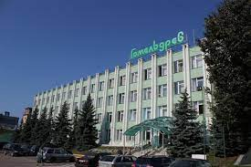Открытое акционерное общество “Гомельдрев” – одно из ведущих в Республике Беларусь предприятий по производству мебели. Оно отсчитывает свою историю с момента открытия в 1879 году в г.Гомеле спичечной фабрики “Везувий”. В 1932 году на базе этой фабрики был создан деревообрабатывающий комбинат. Тысячный коллектив рабочих, ИТР и служащих начал выпускать мебель, паркет, телеги. Комбинат имел свою электростанцию на 1000 киловатт, ремонтно-механическую мастерскую и паровые сушилки. К 1934 году был построен рабочий посёлок, два интерната на 350 человек, столовая. Было открыто фабрично-заводское училище по подготовке кадров. В 1941 году на комбинате было налажено производство лыж для самолётов, военизированного обоза, ящиков для снарядов и других изделий для нужд фронта. Сотни рабочих в первые дни войны ушли на фронт, предприятие вместе с оставшимися работниками было эвакуировано в Сталинград и продолжило выпуск продукции для нужд фронта. В 1943 году, сразу после освобождения Гомеля от немецко-фашистских захватчиков, началось возрождение комбината. Расчищались руины, строились цеха, из Сталинграда возвращались вагоны с оборудованием. Комбинат, будучи в строительных лесах, приступил к изготовлению пиломатериалов, оконных блоков, школьных парт, других столярных изделий, необходимых для восстановления города Гомеля. Численность работников составляла 500 человек. В последующий период предприятие проводило последовательную техническую политику по строительству новых цехов, созданию новых производств, реконструкции и расширению действующего производства на основе внедрения нового, современного, высокоэффективного оборудования и прогрессивных технологий. Общая численность работников к концу 50-х годов составляла уже около 4000 человек. В 1971 году на базе Гомельского ордена Трудового Красного Знамени деревообрабатывающего комбината было создано производственное деревообрабатывающее объединение “Гомельдрев”. В его состав, на правах филиалов вошли: фанероспичечный комбинат, мебельная фабрика “Прогресс” (до 1995г.) и в 1980году – Гомельский леспромхоз. Общая численность работающих превышала 8000 человек. К этому времени объединение “Гомельдрев” производило корпусную и мягкую мебель, стулья, багет, спички, клееную фанеру, пиломатериалы, шпон строганный. В составе объединения находилось производство спецавтофургонов для Минобороны СССР, которое занимало 45% от общего объёма выпускаемой продукции объединения и 63% от объёма выпускаемой продукции головного предприятия. В 1994 году в условиях конверсии спецавтофургоны были сняты с производства. Предприятие в сжатые сроки решало сложнейшую задачу преобразования площадей под выпуск мебели из ценных пород древесины с применением высокотехнологичного импортного деревообрабатывающего оборудования ведущих европейских производителей. ОАО “Гомельдрев” создано приказом Министерства по управлению государственным имуществом и приватизации Республики Беларусь 28 марта 1997 года № 85 путем преобразования арендного производственного деревообрабатывающего предприятия “Гомельдрев”. Проведенная коллективом предприятия работа позволила создать сквозную технологическую линию от лесопиления, раскроя пиломатериалов на заготовки и их сушки до цеха по производству мебели из натуральной древесины и поставить предприятие в ряд высокотехнологичных предприятий, выпускающих конкурентоспособную продукцию, пользующуюся спросом как в Республике Беларусь и странах СНГ, так и на западном рынке. Созданное на площадях конверсионного цеха производство элитной мебели было включено Государственным комитетом по науке, технике и технологиям в Реестр высокотехнологичных предприятий и производств (Регистрационный номер 36-ПРЕ от 16.02.2000г.). В 2009 г. на предприятии был реализован проект по организации выпуска деревянных домов каркасно-щитового типа на оборудовании фирмы “Mitek” (Чехия). Технология по производству подобных домов широко используется в Канаде, Скандинавии, Германии и других европейских странах, приобретая все большую популярность в России и Беларуси. Ромео, [16.05.2023 14:22] В начале 2012 г. на головной площадке произведен успешный запуск завода лесопиления, а в начале 2015 г. начал свое функционирование завод по производству плит МДФ и ХДФ.
ЗАО Гомельский ВСЗ
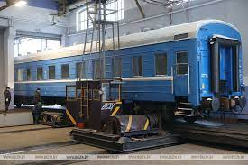Завод является одним из старейших промышленных предприятий Беларуси. История завода ведет свое начало с создания в 1874 году Гомельских железнодорожных мастерских, которые обеспечивали базу для ремонта всех видов паровозов, пассажирских и грузовых вагонов обслуживавших железные дороги Северо-Западного края. В то время железнодорожные мастерские были самым крупным предприятием в Гомеле. В начальный период на нем работало более 600 человек. Вскоре в мастерских строится парокотельная с электростанцией, которая вплоть до 1934 года обеспечивала электроэнергией не только мастерские, но и весь железнодорожный узел ст. Гомель. С началом первой мировой войны на площадях Гомельских железнодорожных мастерских были размещены производственные мощности эвакуированных Либавских мастерских. Совместными усилиями ремонтники обеспечивали нужды фронта в подвижном составе. Гражданская война привела к нарушению нормальной деятельности мастерских. Оборудование неоднократно эвакуировалось, работники покидали рабочие места. Однако к 1924 году мастерские удалось восстановить и даже увеличить производственные мощности, причем выпуск продукции достиг довоенного уровня. В период 1925-1940 годов Гомельские железнодорожные мастерские реконструируются, расширяются цеха, вводится новое оборудование. Строится новое здание завода, увеличивается мощность электростанции и компрессорной. Мастерские осваивают производство запасных частей для сельскохозяйственной техники. Вводится в строй жилье для работников предприятия. В 1929 году предприятие было переименовано в Гомельский паровозоремонтный завод. К началу Великой отечественной войны завод являлся одним из крупнейших предприятий своей отрасли. Число занятных на производстве превышало 3 000 человек. В 1941 году завод эвакуируется в глубокий тыл. Когда в 1943 году Красная Армия освободила Гомель, завод лежал в руинах. Начинается восстановление производства, первый этап которого был завершен к 1946 году. Цеха пополняются оборудованием, возвращенным из тыла. В 1944 году предприятие получает название Гомельский вагоноремонтный завод. В 1948-1957 годах завершается полное восстановление завода, происходит наращивание производственных мощностей. В 1954 году объем продукции, выпускаемой заводом, превзошел довоенный. Производственные процессы модернизируется, вводятся машинная сборка, непрерывная заливка и т.д. В 1957 году завод перекрыл проектную мощность. Котельная и нагревательные печи цехов переведены с твердого топлива на жидкое. Строится жилье для работников предприятия. МПС принимает решение о специализации завода на ремонте цельнометаллических вагонов (ЦМВ). Осваивается ремонт ЦМВ багажных, почтовых, купейных. В I960 году на заводе работает 1 680 человек. В 1961-1967 годах создается отделение по покрытию поверхностей деталей вагонов, осваивается подводное полирование, вводится в строй травильное отделение, организуется эмалировочное отделение. В этот период проводится газификация завода, создается участок отливки деталей из алюминия. В 1964 году вводится цех по разборке вагонов и комплектованию деталей и узлов, отопление завода переводится с парового на водяное. Строится жилье для работников завода. В 1968-1979 годах на заводе создается участок точного стольного литья, электроремонтный цех, строится здание роликового отделения, вводится в эксплуатацию вычислительная техника. Активно развивается социальный сектор: строится детсад-ясли, столовая, спортзал, клуб, база отдыха, модернизируется здравпункт. Устанавливаются станки с ЧПУ, происходит реорганизация производства, создается отдел АСУП. Осваивается модернизация вагонов с деревянным корпусом, внедряется комплексная система управления качеством выпускаемой продукции. Осваивается переоборудование вагонов специального назначения. В 1977 году организован самостоятельный инструментально-метизный цех. Вскоре сдается в эксплуатацию новое здание транспортного цеха. В 1980-1991 годах внедряются сетевые графики ремонта вагонов, вводятся прогрессивные технологические процессы, осваивается выпуск непродовольственных товаров народного потребления (ТНП). Внедряется суточно- оперативное планирование с помощью которого завод добивается ежедневного коэффициента ритмичности равного единице. Завод лидирует в своей отрасли. Внедряется бригадная форма организации труда, с оплатой согласно коэффициенту качества труда. Вводятся новые производственные мощности. В 1983 году создается хозрасчетный участок нестандартного оборудования. Осуществляется комплексная механизация ряда процессов, ведется переоборудование вагонов. Расширяется социальный сектор. В 1987 году завод выпустил 1 143 ЦМВ. В 1990 году создается отдел по изысканию резервов для улучшения работы предприятия в рыночных условиях, в производство вводятся новые наименования ТНП. В 1991-1999 годах проводится внедрение мероприятий по совершенствованию производства в рыночных условиях, осваивается выпуск новых ТНП. Завод успешно занимается переоборудованием и восстановлением вагонов, бывших в эксплуатации, осваивает переоборудование межобластного вагона, вагона типа СВ. Организован участок полимерного покрытия деталей, раскройно- прессовый участок, создаются дополнительные рабочие места. При заводе открываются магазины. В последние годы на заводе ведется восстановление и капитальный ремонт ЦМВ различных типов, организован участок УРВК, внедряется новое оборудование, самостоятельно изготавливается оборудование и оснастка. Проведенная заводом работа по освоению новых производственных мощностей позволила с 1 января 2002 года приступить к ремонту кузова пассажирских вагонов постройки Тверского ВСЗ. В 2000-2012 гг. в истории коллектива завода перевернута новая страница - завод приступил к строительству пассажирских вагонов совместно с ОАО "Крюковский вагоностроительный завод". В 2008 г. освоена сборка купейного вагона, в 2009 г. выпущен первый спальный вагон, а в конце 2010 г. с завода вышел первый жестко-открытый плацкартный вагон. Новым направлением деятельности завода является ремонт и изготовление специализированной самоходной путевой техники. Учитывая изменившеюся специфику производства, переход от ремонта вагонов к их изготовлению, в ноябре 2011 года завод реорганизован в Закрытое акционерное общество "Гомельский вагоностроительный завод". Сегодня ЗАО "Гомельский ВСЗ" - это высокопрофессиональный, многопрофильный коллектив с многолетним опытом работы, мощной, постоянно совершенствующейся производственной базой.
ОАО «Гомельский завод литья и нормалей»
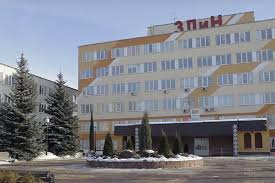9 октября 1979г., согласно приказу №272 Министерства машиностроения для животноводства и кормопроизводства СССР начато строительство «Гомельского завода литья и нормалей». 10 декабря 1981г. в цехе нормалей была изготовлена первая деталь: заклепка КИС0604601. Этот день считается днем рождения завода. В августе 1983г. с конвейера вышла первая жатка для уборки кукурузы - КИС0600000, в сентябре 1983г. были собраны первые 10 штук травяных жаток КИС0200000. 11 февраля 1987г. в соответствии с приказом №44 Министра машиностроения для животноводства и кормопроизводства, заводу предоставлен статус самостоятельного предприятия (юридического лица) в составе производственного объединения «Гомсельмаш». 20 января 1988г. состоялась первая плавка в цехе высокопрочного чугуна. К 1990 году основные производственные мощности были освоены. 14 мая 1991г. был получен статус Республиканского унитарного предприятия. В соответствии с Указом Президента Республики Беларусь от 24 мая 1996г. №208 «О некоторых мерах по упорядочению деятельности субъектов хозяйствования» завод решением Гомельского облисполкома от 22 октября 1996г. №513 зарегистрирован и внесен в Реестр общереспубликанской регистрации за №23-049. Решением Гомельского областного исполнительного комитета от 12 августа 2002г. №523 Республиканское унитарное предприятие «Гомельский завод литья и нормалей» зарегистрировано в Едином государственном регистре юридических лиц и индивидуальных предпринимателей за №400051772 (Свидетельство о Государственной регистрации коммерческой организации за №0053207). 2001 г. – получен первый сертификат по СМК. 2005 г. – изготовлены: первый картофелеуборочный комбайн ПКК-2-02 и первая ротационная косилка-плющилка КПР-9. 2008 г. – изготовлен первый льноуборочный комбайн КЛС-3,5. 2010 г. – изготовлен новый подборщик КВС-4-3900000 для подбора из валков подвяленных сеяных и естественных трав, также освоено производство фланцевых болтов и гаек, колодки тормозной чугунной для локомотивов. 2011 г. – изготовлена установка початкоделителя КПС-4-0500000 к початкоуборочному комбайну КПС4000000. 2013 г. – изготовлены ботвоуборочный и корнеуборочный модули к самоходному свеклоуборочному комбайну СКС-624-1, жатка зерновая ЖЗК-9-2 шириной захвата9м. В соответствии с законодательством Республики Беларусь о приватизации государственного имущества, Республиканское унитарное предприятие «Гомельский завод литья и нормалей» преобразовано в Открытое акционерное общество «Гомельский завод литья и нормалей» (приказ Государственного комитета по имуществу Республики Беларусь от 30 декабря 2013г. №299). 100 процентов акций общества принадлежит ОАО «Гомсельмаш» Решением Гомельского городского исполнительного комитета от 29 января 2014г. в Единый государственный регистр юридических лиц и индивидуальных предпринимателей внесена запись о государственной регистрации Открытого акционерного общества «Гомельский завод литья и нормалей» (ОАО«ГЗЛиН») с регистрационным номером №400051772 (Свидетельство о Государственной регистрации юридического лица за №0094190). Деятельность ОАО «ГЗЛиН» направлена на увеличение вклада в ускорение социально-экономического развития Республики Беларусь, области, города, холдинга «ГОМСЕЛЬМАШ» и обеспечения на этой основе роста благосостояния трудового коллектива. В настоящее время ОАО «ГЗЛиН» представляет собой современную промышленную организацию, обладающую достаточно высоким потенциалом, имеющую сложное оборудование и квалифицированные кадры.
ОАО «Гомельский ликеро-водочный завод «Радамир»
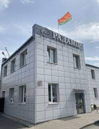История винокурения на славянской земле занимает много томов. Первые упоминания в летописях о хлебном вине, так тогда называлась водка, относятся к 14 веку. Однако, есть все основания утверждать, что изготовление хмельного напитка из ржи, пшеницы и ячменя в наших местах имеет более чем 1000-летнюю историю. Винокурни, принадлежавшие роду Румянцевых Свои давние традиции имеет и производство водки на территории Гомеля и Гомельской области. В свое время здесь были широко известны винокурни, принадлежавшие старинному роду Румянцевых. Продолжателем и в каком-то смысле наследником древних традиций винокурения стало ОАО "Гомельский ликеро-водочный завод "Радамир" - предприятие с более чем вековой историей. Вместе со страной оно переживало исторические катаклизмы и войны, взлеты и падения. Но при этом все лучшее в производстве удалось сохранить. Свою деятельность предприятие начало в 1897 году, как Новобелицкий казенный винный склад, находившийся в ведении губернского акцизного управления. После Октябрьской революции на базе винного склада был образован спирторектификационный завод. В марте 1920 года трудовой коллектив предприятия насчитывал 11 рабочих и 3 служащих ивыпускал 1116 ведер спирта. Однако уже в 1922 году мощность завода составила 175000 ведер хлебного вина. В 1928 году на предприятии был занят уже 151 человек и потребителям отправлялись, кроме хлебного вина, спирт-сырец, спирт-ректификат, сивушные масла, денатурат, олифа и эфиры. Завод прошел ряд этапов своего становления. За вековую историю предприятие испытало различные реорганизации, менялись названия завода и его подчиненность. С 1964 года предприятие приобрело название "Гомельский ликеро-водочный завод" и это название завод сохранил до сегодняшнего дня. В 70-80 годы завод добился подъема и расцвета производства, о чем свидетельствовал широкий ассортимент выпускаемых изделий, насчитывающий свыше 50 наименований. Гомельский ликеро-водочный завод Сувенирная продукция "Беловежская" и "Зубровка" пользовалась большим спросом в столице СССР Москве и украшала столы на приемах отечественных и зарубежных гостей. Однако с 1987 по 1990 годы предприятие было перепрофилировано в Гомельский завод безалкогольных напитков. В это период основой продукцией завода были 26 наименований газированных напитков, сиропов, а также минеральная вода "Криничка". В 1990 году предприятие вновь стало производить алкогольную продукцию и получило прежнее название – "Гомельский ликеро-водочный завод". С 1994 года кроме традиционных водок "Русской", "Пшеничной", "Столичной", "Экстры", выпускаемых в бывшем Советском Союзе, завод производил национальные белорусские изделия: настойки "Чабаровая", "Ядлауцовая", "Кменная", "Вострая". Их рецептуры разрабатывались непосредственно специалистами завода. Так же в то время производили такие виды продукции, как "Белорусский джин", настойки "Арыгiнальная" и "Арэхавая". История КПП "Полесье", являющегося в настоящее время филиалом ОАО "Гомельский ЛВЗ "Радамир" началась еще раньше - в 1867 году. Тогда он назывался "Солтановский паровой №206 винокуренный завод". Ректификационный цех В 1954 году был введен в эксплуатацию ректификационный цех с суточной мощностью в 600 дал спирта-ректификата, а в 1955 году был построен углекислотный цех. В 1980 на заводе внедрена новая линия непрерывного разваривания крахмалистого сырья и с 1981 года завод вышел на проектную мощность 2000 дал в сутки. В 2002 году спиртзавод был присоединен к ОАО «Гомельский ликеро-водочный завод «Радамир», после чего началась активная реконструкция предприятия.
ОАО «Гомельская мебельная фабрика «Прогресс»
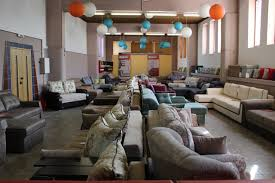Основанная в 1963 году мебельная фабрика – сегодня в числе первых по объему выпускаемой мягкой мебели в Республике Беларусь и широте охвата торговой сети не только в Республике Беларусь, но и России, Казахстане, Кыргызстане, Молдове, Армении, Грузии, странах Балтии. ОАО «Гомельская мебельная фабрика «Прогресс» - является ежегодным победителем престижных конкурсов и обладателем наград отечественных и международных выставок. Это награды за качество, экологичность, за широкий ассортимент, оригинальный дизайн и инновационные технологии. На предприятии внедрена и успешно функционирует система менеджмента качества, о чём свидетельствует сертификат соответствия разработки и производства мебели бытовой для отдыха требованиям СТБ ISO 9001:2015. В настоящее время процедура подтверждения соответствия продукции осуществляется согласно требованиям технического регламента таможенного союза ТР ТС 025/2012«О безопасности мебельной продукции». Сырье и материалы, применяемые в производстве мягкой мебели,соответствует самым высоким требованиям. Только качественный, натуральный и безопасный материал – приоритет Гомельской мебельной фабрики «Прогресс». Поставив своей целью выпускать мебель современного дизайна и высокого качества, с применением натуральных материалов и новейших технологий ОАО «Гомельская мебельная фабрика «Прогресс» успешно следует в выбранном направлении на протяжении полувека.
МОЗЫРЬ
Мозырь - один из самых древних городов Белорусского Полесья. В письменных источниках впервые упоминается под 1155 годом в связи с его передачей великим князем киевским Юрием Долгоруким черниговскому князю Святославу Ольговичу.
Мозырь - город в Гомельской области, центр Мозырского района. Расположен на живописной холмистой местности в границах Мозырской гряды в 133 км к юго-востоку от Гомеля, 7 км от железнодорожной станции на линии Калинковичи - Овруч (Украина), автомобильными дорогами соединен с Гомелем, Бобруйском, Овручем. Здесь находится крупнейший в Беларуси порт на реке Припять. За лесистые пригорки, зеленые луга и голубые озера Мозырь и его окрестности называют маленькой "белорусской Швейцарией".
Ученые до сих пор не пришли к единому мнению о происхождении названия города. Одни считают, что ему дала имя народность мазур, другие связывают с древнескандинавским словом "мосыр" (сырость), третьи - с тюркским словом "мосар" (холм, курган).
До наших дней дошло интересное предание, со своей стороны дающее объяснение как происхождению города, так и появлению его названия. В давние времена два брата, выходцы из Киева, поселились на диком горном берегу Припяти. Место оказалось удобным и плодовитым для их промысла - заготовки рыбьего жира. Однако недолго братья жили в согласии. Младшему все удавалось в торговле, и он стал богаче старшего. Младший брат решил отселиться и потребовал причитающуюся ему долю товара (рыбьего жира). Между братьями началась вражда. Старший брат обратился за помощью к местной колдунье, но та была поражена красотой младшего брата и предложила мир. Старший брат рассвирепел, и в ярости закричал: "Мой жир! Я не уступлю его ни мерки". С тех пор и пошло название места: Можир - Мозырь.
С древних времен город поочередно входил в состав раннефеодального Киевского государства, затем - Великого княжества Литовского, Речи Посполитой. До революции являлся уездным центром Минской губернии Российской империи. Значительная часть истории Мозыря - это череда быстротечных превращений города в руины. Не раз за прошедшие годы Мозырь подвергался разорениям, неоднократно нависали над ним дымы пожарищ. Памятное в истории Мозыря лето 1609 года. Пожар тогда уничтожил почти весь город. Когда в Мозырь приехали посланцы из Минска переписывать, что сгорело, в нем был только пепел. Поколения уходили на то, чтобы восполнить людские ресурсы и возродить экономику. Археологи свидетельствуют, что в определенные периоды, судя по отсутствию находок, жизнь здесь "едва теплилась". Но Мозырь упорным трудом своих жителей возрождался, становясь все краше.
В Мозыре археологами найдено несколько городищ. Самому старому из них уже более десяти веков. На широкую историческую дорогу Мозырщина вышла во времена Киевской Руси, когда по полноводной Припяти пролег путь из "варяг в греки". Естественно, лежащее на оживленном торговом пути поселение не могло не иметь укреплений. В 1543 году началось возведение по последнему на тот момент слову военной оборонительной техники знаменитого Мозырского замка, башни которого возвышались на 25 метров. Но жизнь замка была недолгой. В 1649 году после штурма и захвата укрепленного Мозырского замка войсками польного (пограничного) воеводы Великого княжества Литовского Януша Радзивилла крепость, а вместе с ней и значительная часть центра города были сожжены. Спустя столетия древний замок восстал из пепла. Второе рождение он пережил в 2005 году, в год 850-летнего юбилея Мозыря.
Мозырь имел довольно широкие торговые связи. Как свидетельствует документ 1516 года, мозыряне со своим товаром ходили в Люблин, Познань, Варшаву, на Волынь. Развитию экономики и культуры Мозыря содействовало строительство Полесских железных дорог. Ежегодно с 6 по 27 января и с 6 по 28 августа проводились в городе ярмарки. Мещане занимались рыболовством и обработкой кожи. С 1877 года работала метеорологическая обсерватория, которая вела наблюдения за климатическими особенностями Полесья. Имелась телефонная связь с Минском.
В феврале 1918 года город был оккупирован германскими войсками, а в 1920 году находился под оккупацией польских войск. В 1924 году стал центром Мозырского района, затем Мозырского округа, Полесской области, с 1938 года - город областного подчинения. В Великую Отечественную войну Мозырь 22 августа 1941 год был оккупирован немецко-фашистскими захватчиками, которые создали здесь лагерь смерти и уничтожили в нем 4730 человек. Более тысячи человек были вывезены на каторжные работы в Германию. Сопротивление оккупантам оказывало патриотическое подполье. Подпольщики спасали людей от вывоза в Германию, передавали партизанам оружие, медикаменты, предупреждали о карательных операциях фашистов, распространяли сводки Совинформбюро. Многие подпольщики погибли. На территории района действовала партизанская бригада имени Александра Невского. 14 января 1944 года Мозырь был освобожден в ходе Калинковичско-Мозырской операции войсками 61-й армии Белорусского фронта под командованием К.К.Рокоссовского. В освобождении города участвовала Мозырская партизанская бригада, которую возглавлял Жильский Александр Лукич.
После войны город был отстроен. С 1954 года Мозырь - районный центр в Гомельской области.
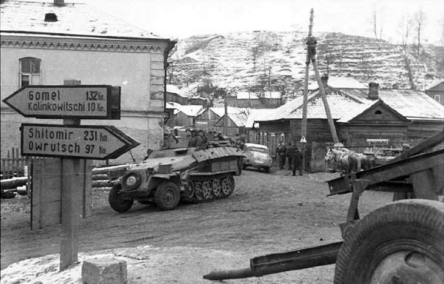Современный Мозырь - крупный промышленный центр Беларуси. Город является центром нефтеперерабатывающей промышленности: здесь действует нефтеперерабатывающий завод. Работают предприятия химической и нефтехимической отраслей, а также машиностроительной, деревообрабатывающей и пищевой промышленности. На базе Мозырского месторождения создано крупнейшее в стране производство - ОАО "Мозырьсоль". Хорошо известна в республике и за ее пределами продукция завода мелиоративных машин и кабельного завода. Разнообразную печатную продукцию выпускает Мозырская укрупненная типография.
В Мозыре действуют Мозырский государственный педагогический университет имени И.П.Шамякина, филиал Гомельского училища олимпийского резерва, средние школы, библиотеки. В городе работает Мозырский драматический театр имени И.Мележа, филармония, краеведческий музей, картинная галерея. Издается объединенная газета "Жыццё Палесся". В 1994 году решением сессии Мозырского городского Совета депутатов был утвержден герб города: в голубом поле "барочного" или "германского" щита взлетает черный орел с золотым клювом, языком и лапами. В 2001 году герб был внесен в Гербовый матрикул Республики Беларусь.
Мозырь с его неповторимым "швейцарским" рельефом, величественной Припятью является одним из красивейших белорусских городов. В Мозыре нет гор, но зато есть высокие холмы. В 2006 году здесь был открыт спортивно-оздоровительный горнолыжный комплекс "Мозырь". Еще одной архитектурной достопримечательностью Мозыря является гребная база, возведение которой было начато в 2006 году в соответствии с программой развития академической гребли в Гомельской области. Торжественное открытие состоялось в 2009 году.
В 1986 году для сохранения уникального природного комплекса с разнообразным рельефом, где произрастают ценные, а также редкие и исчезающие виды растений, занесенные в Красную книгу Беларуси, был основан ландшафтный заказник республиканского значения - Мозырские овраги. Расположен на возвышенной и расчлененной части Мозырской гряды. Растительность заказника относится к Полесско-Приднепровскому геоботаническому округу. В Мозырских оврагах произрастает свыше 500 видов высших сосудистых растений, из которых в Красную книгу Беларуси занесены ветреница лесная, лилия кудреватая, клопогон европейский, многоножка обыкновенная, венерин башмачок настоящий. Мозырщина - край богатой культуры и истории, самобытных песен и народных промыслов. Здесь живут трудолюбивые, талантливые, самобытные, сердечные, гостеприимные люди, мастера своего дела. На Мозырской земле жил сподвижник русского писателя и философа А.Н.Радищева - педагог и мыслитель конца XVIII века Иосиф Еленский; соратник знаменитого Кастуся Калиновского - Иероним Кеневич; народный просветитель, священник из Мелешковичей - Павел Тилинский; участник первой, второй мировых и гражданской войн, кавалер 4-х Георгиевских крестов и пяти советских боевых орденов - Вячеслав Зборовский. Прославил Мозырщину также и народный артист Беларуси, музыкант, композитор и профессор Михаил Яковлевич Финберг. Мозырь - родина члена-корреспондента НАН Беларуси, доктора технических наук, профессора Владимира Александровича Пилипенко; доктора технических наук, профессора, члена-корреспондента АН СССР, заслуженного деятеля науки и техники РСФСР Владимира Владимировича Добровольского; профессора, заслуженного деятеля науки Беларуси Ильи Григорьевича Некрашевича; художника, заслуженного деятеля искусств Беларуси Петра Сидоровича Дурчина; заслуженной артистки Беларуси Юдифи Самойловны Гальпериной; заслуженной артистки Беларуси Ларисы Александровны Ермолиной; заслуженной артистки Беларуси Светланы Ивановны Суховей; спортсмена (тяжелая атлетика), заслуженного мастера спорта Беларуси Александра Владимировича Анищенко; спортсмена и тренера (гребля на байдарках и каноэ), заслуженного мастера спорта СССР, заслуженного тренера Беларуси, заслуженного тренера СССР Леонида Андреевича Деревянко.
Туров
Туров — один из древнейших городов на территории Беларуси. В "Повести временных лет" он впервые упоминается под 980 г. По древности он уступает только Полоцку, известному с 862 г. Туров — древнейший город на территории летописного племени дреговичей, одного из наиболее развитых восточнославянских племен, имевших свое княжение еще до вхождения его в состав древнерусского государства с центром в Киеве. Очевидно, он был наиболее крупным населенным пунктом на территории дреговичей и являлся экономическим и политическим центром, своеобразной столицей княжения, сложившегося на территории расселения этого племенного союза.
В истории древней Руси Туров играл довольно значительную роль. Это нашло свое отражение в том, что он одним из первых выделился в самостоятельное княжество при первом же делении Киевского княжества в 988 г. Владимиром Святославичем между своими сыновьями. Туров был выделен третьему по старшинству сыну Владимира — Святополку, чем подчеркивалось значение города, уступавшего лишь Новгородскому и Полоцкому княжествам, выделенным старшим сыновьям Владимира — Вышеславу и Изяславу. В Турове была основана одна из первых епископий на Руси. Туровское княжество в числе первых начало предпринимать попытки к получению политической самостоятельности и независимости от Киевского великокняжеского престола еще при жизни Владимира Святославича в начале XI в. В дальнейшем, при последующих делениях Киевского княжества, оно выделялось старшим сыновьям киевских князей, производивших раздел Киевской Руси. Важное значение Турова подчеркивалось также его почти постоянным нахождением в 11 в. в распоряжении старшей наследственной линии великих князей киевских. Как правило, он отдавался прямым наследникам киевского великокняжеского престола, и очень часто прямо с туровского престола они переходили на киевский великокняжеский. После смерти Владимира Святославича в 1015 г. его преемником на киевском великом княжении стал его сын — туровский князь Святополк Владимирович, после смерти Ярослава Мудрого в 1054 г. — его сын —туровский князь Изяслав, а после смерти великого князя киевского Всеволода Ярославича (последний сын Ярослава Мудрого) в 1093 г. киевский престол вновь занимает туровский князь Святополк Изяславич, сын старшего сына Ярослава Мудрого.
Значение Турова в политической жизни древней Руси и в жизни дреговичей было столь велико, что его именем стало называться новое общественно-политическое формирование — Туровское княжество, сложившееся на базе предшествовавшего княжения дреговичей дофеодальной эпохи. Но с 12 в. значение Турова в общеполитической жизни древней Руси падает. Это объясняется активизацией исторических событий на порубежье с половецкой степью, созданием крупных экономических и политических центров в Поднепровье (Черни¬говское княжество), северо-восточной Руси (Владимиро-Суздальское княжество), на юго-западе русских земель (Галицко-Волынское княжество). Туров редко упоминается в летописях, значительно чаще встречаются записи о Туровском княжестве и туровских князьях. Непосредственное отношение к городу Турову имеют лишь две записи. Под 980 г. летописи сообщают о том, что «...бе бо Рогволод пришел из-за моря и имяше волость свою в Полотьске, а Тур Турове, от него же и Туровци прозвашася». Достоверность сведений о Рогволоде в этой записи проверяется другими сообщениями летописца и не оспаривается исследователями, как сообщение о князе Туре. Однако совпадение названия города Турова и имени князя Тура позволило некоторым исследователям высказать предположение, что речь идет об этимологической легенде, призванной объяснить происхождение названия города и оправдать столь близкое созвучие имени князя и названия города. Тем не менее вызывает сомнение название древнерусского города именем варяжского князя поскольку подобных прецедентов не знает древнерусская этимология.
Следует учитывать при этом, что на территории древней Руси было очень много названий рек, озер и населенных пунктов с корнем "тур". Скорее всего их этимология связана не с именами скандинавских князей, а с названием местного восточнославянского происхождения. Патронимическая форма названия города указывает на принадлежность города лицу с именем Тур. Но в древнерусском языке отсутствовало такое имя. Возможно, это было прозвище лица, основавшего и владевшего этим городом. Подобные прозвища существовали в древнерусском обиходе. Второе объяснение названия города происходит от названия дикого животного - тура, которое в изобилии присутствовало на наших землях. Третье предположение связывает название Турова с башней-турой. Предполагают, что на месте, где возник Туров в глубокой языческой древности было капище - место поклонения и жертвоприношения идолу-заступнику имя которого Тур.
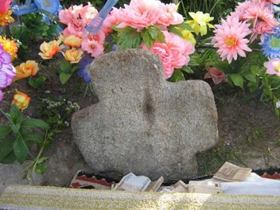Существуют топонимические сведения о том, что приток Припяти р. Струмень, протекающая возле туровского городища, ранее называлась р. Тур. Упоминание о р. Тур встречается также в работе епископа Минского и Туровского Евгения, посвященной исследова¬нию деятельности Кирилла Туровского. К сожалению, у этих сведений отсутствует первоисточник, что лишает нас возможности произвести дополнительную проверку такого названия протока р. Струмень. Современное местное население рек и протоков под таким названием вблизи городища не знает. Поэтому как ни заманчива возможность использовать название р. Тур для объяснения происхождения названия города, от нее приходится отказаться как от недостаточно убедительно доказанной. Второе летописное упоминание Турова связано с событиями 1158 г. Внук туровского и великого киевского князя Святополка Изяславича Юрий Ярославич совершил дерзкую попытку восстановить самостоятельность туровского княжества, независимость от киевского великого князя и династию Изяславичей на туровском престоле после того, как в связи со смертью Святополка Изяславича в 1113г. оно сначала попало в зависимость от великого князя киевского Владимира Всеволодовича Мономаха, а с 1125 г. после его смерти отошло его сыну Вячеславу Владимировичу. В 1142 г. черниговский князь Всеволод Ольгович, заняв киевский престол, отдает Туров своему сыну Святославу. В бурных событиях 40-50-х годов XII в., когда на киевском великокняжеском престоле происходят многократные смены правителей из династии Мономашичей и черниговских Святославичей.
Туров, Туровская земля и отдельные ее города (с прилегающими землями) служат средством удовлетворения запросов союзников и противников великого князя и переходят из рук в руки. В условиях кратковременных правлений очередных временных владельцев страдали интересы местного населения. Поэтому решительная попытка Юрия Ярославича в 1158 г. восстановить самостоятельную династию на туровском престоле встретила горячую поддержку местного населения, хорошо помнившего и понимавшего преимущества самостоятельности и независимости в сравнении с условиями временных владений и постоянной смены правителей. Очевидно, в Турове еще были сильны определенные слои населения, близкие в прошлом к Изяславичам и сохранившие о них добрую память, которые связывали с их возвращением на туровский престол определенные надежды.
Воспользовавшись вспышкой очередного обострения борьбы за киевский великокняжеский престол после смерти Юрия Владимировича Долгорукого (1157 г.), Юрий Ярославич внезапно захватил Туров вопреки воле очередного киевского князя. Заняв киевский престол, Изяслав Давыдович к походу на Юрия Ярославича привлек силы Киевского, Черни¬говского, Владимирского, Галицкого, Смоленского княжеств и отряды кочевников-берендичей. Подобная концентрация сил крупнейших княжеств говорит об активной поддержке Юрия Ярославича широкими слоями местного населения, а так же о том, что Туровское княжество представляло собой значительную силу, а город Туров был сильно укреплен, хорошо приготовлен и приспособлен к длительной обороне. В древней Руси городом назывался населенный пункт, защищенный оборонительными сооружениями. Очевидно, оборонительные сооружения древнего Турова были очень сильны, так как оказались неприступными для объединенного войска крупнейших княжеств древней Руси. По-видимому, они были возведены еще в 11 в., поскольку в бурных событиях 12 в. при кратковременных владениях Туровом практически некому было заниматься возведением мощных оборонительных сооружений и укреплений. Недостаток письменной информации о древнем Турове восполняют археологические исследования его древнего городища. Туров был не только большим политическим центром, но и одной из культурных столиц древнерусской земли. В самом начале 11 века при Святополке в Турове основана епископская кафедра. В Турове согласно летописи на начало 12 века было около 40 церквей, а по преданиям — 75-80. Доподлинно известны: Храм 12 века, Спасов и Богородицкий храмы или монастыри, Борисоглебский монастырь, Никольский монастырь, Варваринский монастырь, монастырь во имя св. Николая, Спасо-Троицкая церковь, Спасо-Преображенская церковь. Ильинская церковь, Петропавловская церковь, Всехсвятская церковь. Центральной фигурой является Кирилла Туровский - епископ туровской епархии, активный деятель и распространитель христианского учения. Он подарил современникам чудесные молитвы, проповеди и притчи. Его произведения пользовались огромной популярностью в Древней Руси и за её пределами. Включались в состав лучших произведений православной церкви «Златоуст» и «Торжественник». Их изучали и писали, подражая им. Годом его рождения считается 1130, а годом смерти - 1186. Свидетельством высокого уровня культуры является широкое распространение письменности, возникновение местных центров обучения и местного летописания, возникновение местных преданий и письменных произведений. В 1865 году в Турове в Спасо-Преображенской церкви найдены остатки Евангелия 11 века, писанного каштановыми чернилами древним уставом - разборчивым геометрическим почерком на листах толстого пергамента малой четверти (около 22. 2 сантиметров в длину и 17.8 сантиметров в ширину). От Туровского евангелия сохранились только 10 листов.

В сохранённом фрагменте древней рукописи находятся 11 инициалов -- украшенных больших букв, которые раскрашены в три цвета - синий, зелёный и красный. Это находка одного из древнейших произведений на Руси свидетельствует о раннем распространении письменности и христианства в Турове. Возможно, здесь в столице одного из важнейших княжеств, а также епархии сложился центр древнерусской культуры и письменности. Можно предположить, что жена Святополка Изяславовича гречанка Варвара прибыла в Туров вместе со своей свитой - образованными приближёнными, что содействовало увеличению культурного уровня населения города. Евангелие представляет собой богослужебный сборник евангельских читаний, которые размещаются в нём по порядку чтения отдельных фрагментов во время соборного богослужения. Евангелие состоит из двух частей: 1 отражает так называемый движимый богослужебный цикл церковного года от пасхи до пасхи, 2 - недвижимый, от начала гражданского года до его окончания. В ½ XIV века Турово-Пинское княжество вошло в состав ВКЛ. В 1508 г. Туров стал столицей мятежа Михаила Глинского против великого князя Литовского Сигизмунда I. В 1793 г. Туровский край присоединен к Российской империи.
В Турове родился епископ Туровской епархии Кирилла Туровский, Константин (Василий) Острожский. Бывали в Турове: А. Г. Лукашенко, патриарх Московский и всея Руси Алексий II, Филорет Минский и Слуцкий патриарший экзарх всея Беларуси Народное предание гласит про одного туровского святого, который похоронен на Борисоглебском кладбище. Его звали Мартин. Это был старый кухарь туровских епископов. Он тяжело заболел, и боль была невыносимой. Мартин лежал в своей кельи и молился, прося у Бога смерти. В этот момент перед ним появились святые Борис и Глеб. Они накормили его хлебом и напоили водой, которую зачерпнули в колодце, ранее выкопанном Мартином на краю кладбища. После этого произошло чудо – Мартин выздоровел. А вода в колодце, которая раньше была жёлтой и невкусной, так как рядом было болото, стала чистой и прозрачной. Когда больному человеку её давал сам Мартин, тот выздоравливал. В 2003 году на Борисоглебском кладбище был найден Мартинов колодец, и он обрёл вторую жизнь. Перед смертью Мартин сказал: «И могилу мою потеряете, но я через столетия покажу, где лежу, и служить буду...». Внезапно, в конце 20 века, на Борисоглебском кладбище начал расти крест. Он постепенно выходит из земли излучая внутреннее тепло. За несколько лет он подрос на 10 см. Крест продолжает выходить из земли. Он сразу стал местом, к которому потянулись паломники - люди верят в его чудесную силу и помощь от болезней. Некоторые местные старожилы говорят, что этот крест был найден одним человеком в Припяти и глубоко закопан среди могил. Специалисты предполагают, что крест 12 века похож по форме на два креста, которые хранятся в церкви Всех Святых. Появление креста туровцы твёрдо связывают с именем святого Мартина, который сдержал своё слово и указывает на свою обитель.
Гомель
Первое упоминание о Гомеле в Ипатьевской летописи значится в 1142 году как владение черниговского князя Игоря Олеговича. Первое письменное упоминание Гомеля относится к 1142 году. Тогда он уже был одним из главных городов на землях радимичей. В те времена Гомель мало чем отличался от других поселений восточных славян. На высоком мысу, прекрасно подходившем для обороны, находился детинец – деревянное укрепление с частоколом, башнями, валами и рвом, который наполнялся водами Сожа.
С северной и западной стороны к нему примыкал так называемый окольный город, где селились ремесленники, купцы и другие горожане, тогда как детинец был сосредоточием княжеской власти, своеобразным административным центром. Благодаря удобному сообщению с соседними регионами (в первую очередь по Сожу и Днепру) Гомель, лежавший на легендарном пути «из варяг в греки», процветал.
В конце 1230-х – начале 1240-х годов южные районы Беларуси подверглись монголо-татарскому нашествию. Согласно археологическим раскопкам, Гомель был взят штурмом и сожжён монголами. Город и округа на длительное время пришли в запустение.
В середине XIV века Гомель вошёл в состав Великого княжества Литовского.
Гомель, как и другие города юго-восточной Беларуси, были приграничными городами ВКЛ. Это во многом определяло их судьбу. За них с конца XV века постоянную борьбу с ВКЛ вело Московское государство.
Ещё одним противником ВКЛ в то время стали крымские татары.
В 1670 году Гомель получил Магдебургское право. Однако большой пожар, произошедший 67 лет спустя, нанес ему очень ощутимый удар. Тогда сгорели все храмы и большая часть домов. Даже замок пришлось отстраивать заново. Но события, определившие современный облик Гомеля, были еще впереди.
В 1772 году произошел первый раздел Речи Посполитой, Гомель вошел в состав Российской империи, став центром Гомельского уезда. Правда, сохранялось такое положение дел недолго. Уже в 1777 году уезд стал Белицким, его административный центр переместился в Белицу. Гомелю потребовалось немало времени, чтобы взять исторический реванш.
Основу для этого заложили представители рода Румянцевых, которые владели Гомелем, начиная с 1775 года, когда он был подарен Петру Румянцеву-Задунайскому Екатериной II. Со временем знаменитый государственный деятель решил, что присутствие в его «личном» городе императорских чиновников является нежелательным и фактически выселил их в Белицу, а сам занялся обустройством Гомеля.
Наследники продолжили его дело. На рубеже XVIII и XIX веков Гомель наверняка представлял собой что-то вроде одной большой строительной площадки. В первую очередь Петр Румянцев, который был представителем одного из самых богатых и влиятельных семейств в Российской империи, озаботился возведением резиденции, достойной этого имени.
Так появился дворец в стиле классицизма, который до сих пор является главной достопримечательностью не только Гомеля, но и всей области.
От его архитектурного наследия, которое представляло «дорумянцевский» период, ничего не сохранилось. В Гомеле не было монументальных храмов. Фактически первым стал собор Св. Петра и Павла, который примыкает к дворцу. Он также является ярким образцом классицизма. Судьба этого храма, построенного по проекту английского архитектора Джона Кларка, оказалась непростой: в советское время в нем действовал планетарий. Однако не исключено, что именно это уберегло собор Св. Петра и Павла от разрушения.
Рядом с дворцом также расположены оранжерея и обзорная башня, которая изначально была… трубой сахарного завода. Таким образом, перед нами свидетельство промышленной революции, которую переживал Гомель во второй половине XIX века. Здание, которое принято называть Охотничьим домиком, было предназначено для летнего проживания графа. После реконструкции здесь открылся Музей истории Гомеля. При Николае Румянцеве в городе начались по-настоящему масштабные перемены. Именно благодаря ему здесь появились первая гимназия, Гостиный двор, Мариинский костел, а также сразу несколько предприятий: спиртавод, ткацкая фабрика и др. За важный вклад, который Николай Румянцев сделал в развитие Гомеля, ему был поставлен памятник рядом с дворцом.
Здание духовного училища в переходном стиле от классицизма к барокко, которое находится на улице Билецкого, играло роль летнего дворца. Духовное училище, которое давало не только религиозное, но и светское образование, разместилось в Гомеле в 1880 году. После Октябрьской революции здание перешло в собственность городского коммунального хозяйства. В наши дни его занимает один из корпусов Гомельского медицинского университета.
Сергей Румянцев стал наследником своего брата. Именно при нем была построена Троицкая церковь. Однако дальнейшим переменам помешала нехватка денег. Испытывая финансовые проблемы, Сергей Румянцев решил заложить Гомель в государственную казну, выручив чуть более 400 тыс. рублей. В 1838 году ту часть города, которая примыкала к дворцу, приобрел граф Иван Паскевич-Эриванский. Все остальное он получил в подарок от Николая I.
Отдельная история – это гомельские мосты. После того, как город шагнул на другой берег реки, проблема связи между двумя частями оставалась очень актуальной. Решали ее с помощью мостов, которые не раз уничтожались весенними паводками, поскольку поначалу были деревянными (интересно, что использовалась даже понтонная конструкция на плотах длиной 175 сажен). В 1857 году был построен арочный мост из камня.
За год до этого город перешел к Федору Паскевичу. При нем появилось немало новых предприятий, включая чугунолитейные и кирпичные заводы. Однако крупнейшим среди них долгое время оставалась спичечная фабрика, носившая громкое название «Везувий». Технический прогресс коснулся многих сторон городской жизни. Так в 1873 году гомельские улицы начали освещаться газом. В городе также был построен водопровод.
Конец XIX века опять ознаменовался масштабным строительством. В первую очередь следует упомянуть здание железнодорожного вокзала. Его появление было связано с тем, что город стал важным транспортным узлом. Через него прошли Либаво-Роменская, а потом и Полесская железные дороги.
Основное население Гомеля составляли евреи. Согласно данным переписи, проведенной в 1897 году, их численность составляла более 20 тысяч. Напоминанием об этом служат каменные синагоги, которые до сих пор можно увидеть в разных частях города, хотя лишь одна из них под названием «Рош Пина» сегодня используется как молитвенный дом.
Евреи занимали видное место и среди гомельского купечества. Не зря многие дома, которые до сих пор украшают центральные улицы, носят их фамилии. Особенно выделяется богатством декоративных элементов бывший доходный дом Маянца, который считается ярким образцом стиля модерн.
На рубеже XIX и ХХ веков гомельская архитектура пополнилась многими зданиями, которые можно увидеть и по сей день. К ним относятся мужская и женская гимназии, учительская семинария, офицерский клуб, а также гостиница «Савой». К той же исторической эпохе относится и церковь Св. Николая в ретроспективно-русском стиле, которая некогда была частью православного мужского монастыря. Во время Первой мировой войны Гомель пережил германскую оккупацию, затем побывал в составе Украинской державы, РСФСР и в 1926 году вошел в состав БССР.

В 1912 году на средства княгини Ирины Паскевич развернулось строительство гинекологической больницы и родильного дома по проекту известного гомельского архитектора Станислава Шабуневского. Ранее она также спонсировала строительство здания для земской больницы. Ныне это один из корпусов Гомельской городской клинической больницы скорой медицинской помощи.
Речица
Непосредственными предками современных жителей Речицкого района являются славянские племена дреговичей. Город Речица возник и вырос на месте их поселения на известном торговом пути «из варяг в греки». Первое летописное упоминание о нем в Густинской летописи относится к 1213 году. Название свое получил от древнего притока Днепра реки Речица, впадавшей в него в районе древнего городища.
В конце ХIV века городом владел литовский князь Витовт (1392-1430), который построил здесь укрепленный замок «из соснового дерева». Замок простоял более двухсот лет и был сожжен казацкими отрядами Золоторенко в 1654 году. В числе первых белорусских городов в 1511 году Речица получила магдебургское право, которое подтверждало дважды в 1561 и 1596 годах. Горожане освобождались от ряда феодальных повинностей, могли заниматься ремеслом, торговлей и земледелием, выбирать городские органы власти — магистрат, суд, создавать ремесленные объединения-цеха .
В 1634 году речицкий староста Александр Слушко построил в городе доминиканский монастырь и костел при нем. Именно здесь была открыта первая библиотека, насчитывавшая 270 томов. Первая православная церковь, получившая название Воскресенской, существовала в городе с конца XI века. Впоследствии ее заменил Свято-Успенский собор.
Не раз речичанам приходилось бороться за независимость своего края. В XIII веке они сражались с перекопскими татарами, в 1410 году речицкая дружина воевала под Грюнвальдом, жители города участвовали в казацко-крестьянских выступлениях Северина Наливайко в 1595 году и Богдана Хмельницкого в 1648-1654 годах. Именно тогда были составлены первый рисунок и план Речицы. После войны России с Речью Посполитой 1654-1657 годах город утратил свое стратегическое значение, его укрепления стали разрушаться. Привилеем от 15 июля 1734 года великого князя ВКЛ и короля Польши Августа III Речица была отдана во владение Раддзивилам.
Во время Отечественной войны 1812 года Речица служила главным складом Южной русской армии и временной резиденцией минского губернатора.
Присоединение к России создало условия для более быстрого развития экономики. На территории Речицкого уезда в начале XIX века были построены несколько поташных заводов, в деревне Гута во владениях Сиверса завод по изготовлению стекла. Рынком сбыта поташа, смолы и дегтя были Одесса, Кременчуг, Херсон. Они доставлялись туда по Днепру и пользовались большим спросом. Помещики Речицкого уезда имели немалый доход и от продажи леса, который сплавляли на Украину.
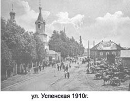Движение по участку Полесской железной дороги Гомель-Лунинец через Речицу началось в 1886 году. И уже в 90-е годы XIX века с железнодорожной станции «Речица» ежегодно отправлялось около 1 млн. ЗОО тысяч пудов разнообразных грузов, 160 тысяч пудов - оборот грузов с речицкой пристани. Согласно Первой Всеобщей переписи населения Российской империи 1891 года Речицкий уезд имел 23 волости, 749 населенных пунктов. Площадь составляла 11 087,5 кв. версты, население - 221 771 человек. В Речице было 9 280 жителей. Работали 2 лесопильни, 2 пивомедоваренных завода, маслозавод и завод по изготовлению кирпича. В городе функционировали приходское училище, 2-х классное народное еврейское училище, несколько еврейских молитвенных школ. Почти 60% населения города составляли евреи.
Начало XX века в городе и уезде было отмечено многочисленными забастовками, стачками, демонстрациями, митингами трудящихся против существующего режима. Только в 1913 году в деревнях уезда состоялось 21 такое выступление. 1918-1921 - годы оккупации города и уезда войсками кайзеровской Германии и буржуазной Польши, борьбы с бандами Галака, Струка, Булак-Балаховича. Огромный материальный ущерб нанесен за это время хозяйству города и уезда, но несмотря на голод и разруху уже в 1921 году дала первый ток Речицкая электростанция, в 1923 году в строй действующих предприятий вступили спичечная фабрика «Днепр» и фанерный завод. К началу 1924 года на полную мощность стал работать гвоздильный завод. В 1925 году в Речице имелось семь государственных промышленных предприятий с общим числом рабочих 1 248 человек. Выпуск валовой продукции в год составил 2 769 400 руб.
В 1926 году Гомельская губерния входит в состав БССР. Речица становится центром Речицкого округа, а 8 декабря 1926 года в составе Речицкого округа образован Речицкий район. Конец 20-х -30-е годы XX века годы активного колхозного строительства в Речицком районе. Первые колхозы были созданы в середине 1929 года: "им. Калинина" (д.Прокисель), "им. Дзержинского" (д.Ровенская Слобода), "Ленинский путь" (д.Ямполь), "Росток социализма" (д.Глыбов) и другие. В конце 1929 года в Речицком районе было 17 колхозов. В них входило 503 семьи. Общественный фонд хозяйств составлял 5 076 га пахотной земли, 1 903 га сенокосных угодий, 76 га садов. К середине 1930 года в районе было уже 45 колхозов, которые объединяли 3 400 семей. К 1933 году урожайность сельскохозяйственных культур по району была следующей: рожь - 10,5 ц с га, озимая пшеница - 11,5, пшеница яровая - 9,4, ячмень - 12 ц с га. Хозяйства района имели 6 817 голов крупного рогатого скота, в том числе 2 703 коровы. На коллективных фермах содержалось 1 315 овец. До 1933 года район специализировался на выращивании конопли и картофеля. В 1934 году стал специализироваться на животноводстве.
В 1940 году в районе функционировало 80 колхозов. Общая площадь сельскохозяйственных угодий составляла 99 724 га, пахотной земли - 33 233 га. В районе было: 80 молочно-товарных ферм, 71 овцеферма, 58 свиноводческих ферм.
23 августа 1941 года Речица и район были оккупированы немецко-фашистскими захватчиками. За время оккупации они уничтожили свыше 5 тысяч человек. Им оказывали сопротивление в городе 5 групп патриотического подполья, на районе действовали две партизанские бригады: им. Ворошилова и «Мститель», районное подполье. 18 ноября 1943 года Речица была освобождена войсками Белорусского фронта.
Послевоенные годы стали для Речицы годами второго рождения. Восстанавливались старые предприятия, строились новые. Снова вступили в строй гвоздильный завод, завод дубильных экстрактов, сдан в эксплуатацию домостроительный комбинат. Восстановлены и заново построены судостроительно-судоремонтный завод, комбинат хлебопродуктов, хлебозавод, керамико-трубный завод, завод «Термопласт».
Большим испытанием для промышленности и сельского хозяйства стали 90-е годы. Но уже к концу их за спадом производства наступил его неуклонный рост. И теперь из года в год промышленность и сельское хозяйство набирают обороты. Об этом особенно говорят достижения передовиков сельского хозяйства Речицкого района, неоднократных победителей областных и республиканских соревнований по уборке зерновых и выход продукции речицких промышленных предприятий на мировой рынок.
Мемориал «Вечный огонь» на площади Труда
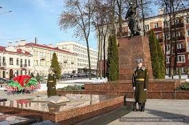Пожалуй, самый «главный» огонь в городе располагается перед памятником воинам и партизанам. От огня проходит аллея с мемориальными досками, на которых высечены имена павших героев. Здесь захоронены герои Советского союза Иван Антошкин и Иван Лапин. Мемориальный комплекс – традиционное место проведение праздничных мероприятий ко дню победы.
Курган Славы в парке Фестивальном
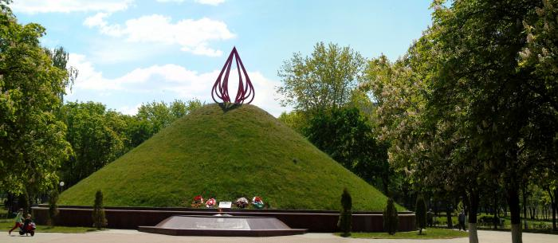В этом мемориальном комплексе присутствуют сразу два огня. Одно пламя выполнено из металла и венчает вершину кургана. Второе – настоящий огонь у его подножья. Для того чтобы насыпать курган Славы, землю собрали с более чем сотни различных мест, на которых происходили ожесточенные бои. При строительстве памятника в 1967 году в него заложили капсулу времени для потомков. Она была вскрыта в 2017 году.
Памятник Кириллу Туровскому около Областного театра
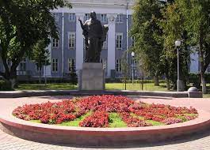Выдающийся деятель культуры и религии жил в древнем Турове, который расположен на территории современной Гомельской области, поэтому у гомельчан есть право считать просветителя и своим земляком. Бронзовый памятник на гранитном постаменте был открыт ко дню белорусской письменности в 2004 году. В честь знаменитого епископа и проповедника назван и сквер, где расположен монумент.
Памятник в Ветке: резные ворота в прошлое
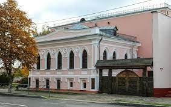Ветковский музей старообрядчества и белорусских традиций известен не только жителям Гомельщины, но и всем белорусам. Ветка стала настоящим центром старообрядцев и сохранила множество предметов их культуры. Музей, который открыли в 80-х годах двадцатого века, сегодня превратился в центр исследования белорусской культуры.
Мемориальный комплекс «Ола»
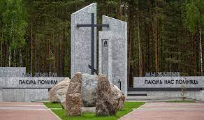Ола (на белорусском — Ала) — бывшая деревня в Светлогорской районе Гомельской области. Была известна с конца 18 века, в 1926 году в ней проживало 79 человек, а перед войной уже 168 человек. Во время Великой Отечественной войны жители соседних деревень прятались в деревне Ола и в близлежащем лесу, спасаясь от фашистов.
В 2020-м году был открыт мемориальный комплекс «Ола»
Мемориальный комплекс «Битва за Днепр»
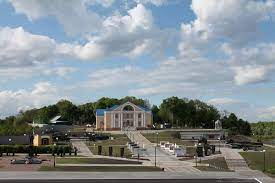Центральная площадь Лоева для местных жителей — святое место. Сюда лоевчане приходят в самые радостные, торжественные и трогательные дни своей жизни. Здесь узами брака сочетаются молодожены, здесь гуляют мамы с младенцами, здесь молодое поколение отдает дань памяти воинам, погибшим в боях на лоевском плацдарме, а у возвышающегося обелиска воспевают величие подвигов солдат-освободителей.
Мемориал "Операция Багратион"
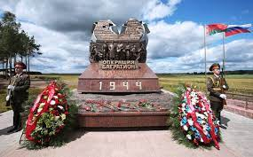Высота памятного знака составляет 7 м. Основными материалами памятного знака являются красный гранит и бронза. Гранитное подножие, выполнено в виде гатей, по которым через полесские болота стремительно продвигались на запад советские танковые армии. В центре композиции – двухметровая бронзовая скульптурная группа, изображающая руководителей операции «Багратион» Жукова, Рокоссовского, Батова, Панова, а также участников тех боёв: партизан, солдат, моряков Днепровской флотилии. Справа и слева — наступающие советские воины. Два главных удара войск символизируют стрелы в качестве фона. Венчают монумент две бронзовые стрелы, изображающие направления главных ударов операции «Багратион» с названиями городов, освобождённых в ходе наступления советских войск.
Памятник детям-жертвам Великой Отечественной войны
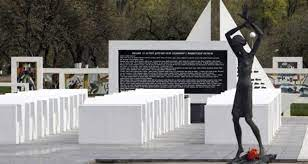Памятник-мемориал спроектирован творческой мастерской заслуженного архитектора Беларуси Леонида Левина (1936–2014). Мемориал был открыт 28 июня 2007 года и задумывался как развернутая в пространстве панорама трагических событий. Он не имеет аналогов не только в Беларуси, но и во всем мире. Основой для создания стали подлинные трагические события Великой Отечественной войны. Неслучайно памятник имеет второе название – «Детская Хатынь». Немецкие власти создали на территории учебного хозяйства в Красном Береге сборный пункт для детей 8–14 лет, которых насильно отправляли в Германию, а часть распределяли по госпиталям в качестве доноров для раненых немецких солдат и офицеров. Всего для этой цели фашисты увезли 1990 детей.
Мемориальный комплекс узникам Озаричского лагеря смерти
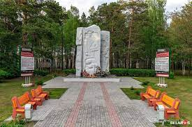Мемориальный комплекс в память о жертвах лагерей смерти расположен на месте концлагеря «Озаричи». Под концлагерем «Озаричи» подразумеваются лагеря «Дерть», «Озаричи», «Подосинник» на переднем крае немецкой обороны у поселка Озаричи Калинковичского района. В Великую Отечественную войну немецко-фашистские захватчики создали около посёлка лагеря смерти, где уничтожили 16,5 тыс. человек.